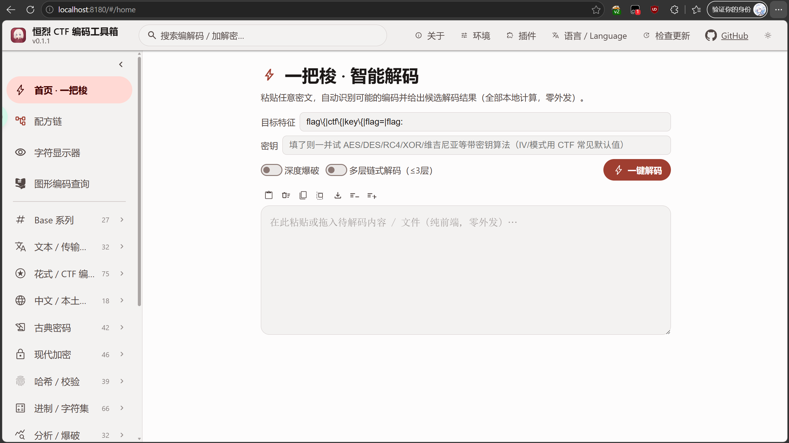
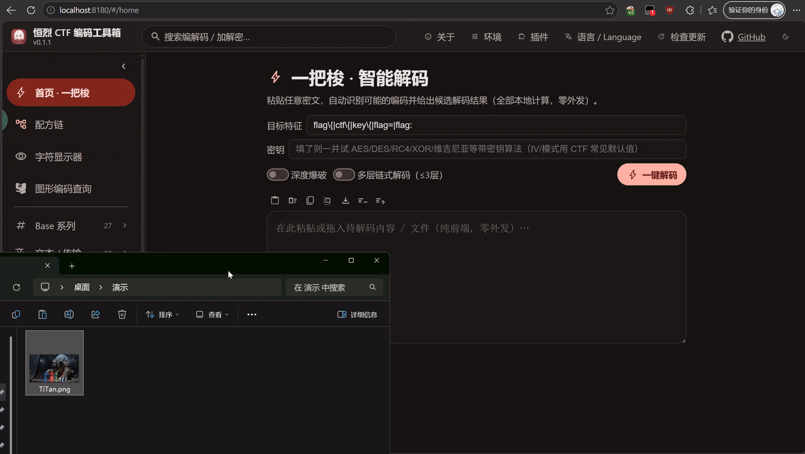
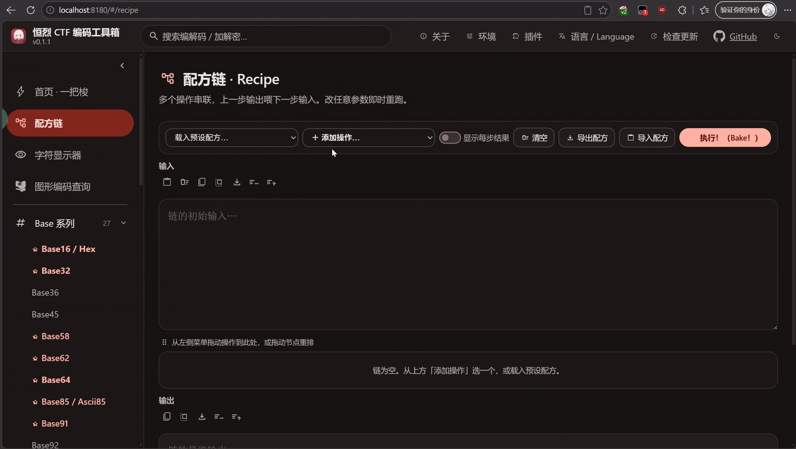
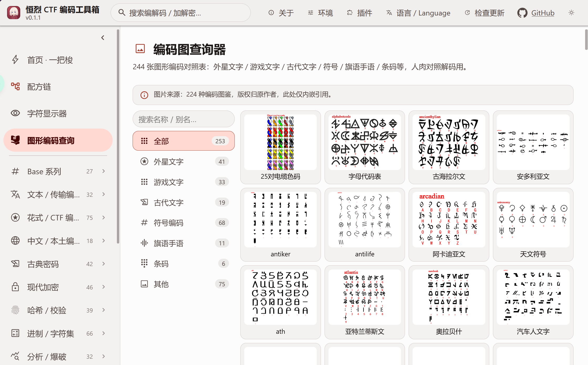
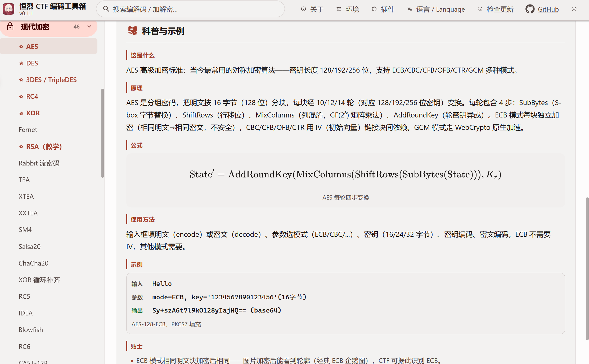
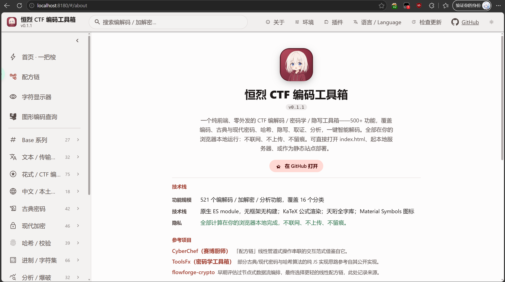
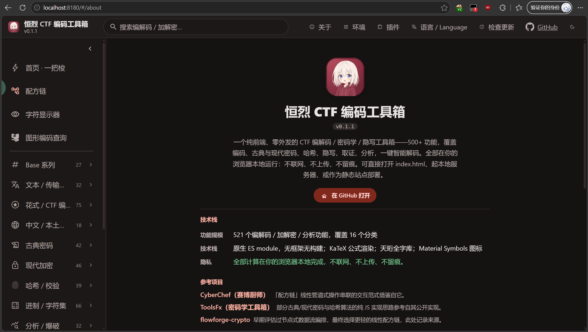

纯前端、零外发的 CTF 编解码 / 加解密 / 隐写分析工具箱：608 个注册操作，其中 592 个纯前端操作在浏览器本地运行，另有 16 个可选本地桥操作。


[!WARNING] 本工具仅供 CTF 学习、竞赛与安全研究使用。请勿将其用于任何违法违规、侵犯他人权益或可能给你自己带来麻烦的用途。使用者需自行承担因不当使用产生的一切后果。 如果你在使用中发现 Bug、算法结果异常或文档缺失，欢迎提交 Issue，最好附上输入样例、期望输出和复现步骤。
纯前端零外发，下载解压后双击
点我启动.py即可使用（需本机有 Python 3）。Windows 全功能，macOS / Linux 桥接类 op 自动跳过。
| 网盘 | 链接 | 提取码 |
|---|---|---|
| 百度网盘 | https://pan.baidu.com/s/1Uqq_ONMBG9qA0dJvUG53Og?pwd=0000 | 0000 |
| 夸克网盘 | https://pan.quark.cn/s/3b7e573b19c0 | 无 |
当前版本 v0.1.5。源码始终以 GitHub 仓库为准：github.com/Henglie/EBCTFCodeBox。
新增功能
【可魔改算法】每个细分算法都增加了可编辑算法的按钮，给你轻松魔改！编辑器换装 CodeMirror 6（行号 / 语法高亮 / 查找替换 / 撤销重做 / 括号匹配），右边还能对照当前算法的实现源码，双栏独立调字号、可拖宽。编辑器按需加载，不拖慢首页。
【快速换算功能】一键换算各类单位！数据量（SI/IEC 双制）、速率、时间、频率、角度、油耗、金额、日期，改任意一格其余即时联动。程序员计算器（手写解析器，不走 eval）。人民币金额大写。日期计算（纯数字自动按纪元秒对照解读）。机器码 ⇄ 汇编互转（Keystone/Capstone WASM 本地运行，不联网）。
【字符显示器全面翻新】新增 Markdown 渲染、数学公式（KaTeX 本地渲染）、天珩字形开关。IDS 表意拆字上线：正查汉字分解树、反查部件拼字、字与 IDS 串双向互转，长结果分页翻阅。
【SVG/PNG 导出所见即所得】导出图内嵌公式排版规则和实际用到的字体，公式不再塌成色块。
【20 种语言全覆盖】新增藏文、维吾尔文、壮文（拉丁）、传统蒙古文四门民族语言；RTL 语言整站镜像布局；全部语言做了一轮语义审校，修复 200+ 处。
【算法扩充至 608 个操作】+18 op（15 个参考实现纯前端化）；DeepSound 音频隐写提取修复上线；ByteStatCNN 编码识别模型本地移植，一键解码打分更准。
【环境面板一键重置】一键清空本地配置、方案、缓存等全部状态，回到刚装好的样子，带二次确认。
修复 BUG
【猫脸暴破】修复了拖入图片后暴破必崩的问题（图片字节传进来了但暴破入口没接住，单次猫脸变换接得住）。现在优先走系统图像解码，JPEG / BMP / 调色板 PNG 全支持，另修纯 JS 解码器三处（调色板越界容错 / 缺调色板明确报错 / 1/2/4 位深行宽错位）。拼图每格新增 a2b3t4 式参数标签。
【解压卡死】Chromium 系浏览器对部分合法压缩数据会无限等待，页面一直空白、不报错。所有解压入口统一加了 2 秒保险，超时自动切换内置备用解压器，ZIP / GZIP / Base64 压缩数据 / NBT 存档 / 归档分析全覆盖。
【编码图竖排错乱】窗口宽度 720-860px 区间文字竖排，根子是全局 CSS 泄漏，已作用域化根治。
【后台任务假死】Worker 启动失败会永远显示「进行中」，已加多层降级兜底。
【换算类别互相污染】油耗分组不再污染其他换算页，按标签页隔离记忆。
【编辑器选区越界崩溃】CRLF 源文件恢复内置模板时崩溃，已统一规范化换行。
【超长文本穿出卡片】字符显示器超长文本改为卡片内滚动。
优化功能
【体积瘦身】完整离线包从 60MB 精简到 9.6MB，体积下降 84%。大资产改「用到再缓存」，断网后核心界面依然可靠可用。
【性能优化】编辑器主包按需加载（首屏 0 加载）；查看器关闭即释放 DOM 与编辑器实例，事件监听全量退订。
【质量收口】608 op 结构校验全过；20 种语言 × 1263 条文案同构校验全绿；真浏览器回归 10 个套件全部通过。
历史版本更新记录见 CHANGELOG.md。
恒烈 CTF 编码工具箱（EBCTFCodeBox）是一个面向 CTF 选手的纯前端编解码工具箱。
它把 CTF 里常见的编码、古典密码、现代加密、哈希校验、进制转换、密码分析爆破、隐写图像等能力汇聚到一个页面里，所有计算在浏览器本地完成，不联网、不上传。目标是：打开一个网页，就能应付赛场上绝大多数编解码需求。
核心设计：
想看完整的功能介绍与场景演示，见
介绍文章.md。

一把梭 · 智能解码：粘进去自动识别编码链并给出候选结果

拖入文件自动识别类型 + 剥离附加数据

配方链：把多个算法串成一条可视化流水线
 |  |
| 图形编码图鉴 · 253 张对照表 | 每个算法附带 edu 科普卡 |
 |  |
| 亮色主题 | 暗色主题（Material 3 昼夜切换） |
纯静态，任意静态服务器即可。推荐用附带脚本（双击或命令行）：
py 点我启动.py # Windows（用 py，不用 python3）
python3 点我启动.py # macOS / Linux
脚本会同时起静态服务器 + 本地桥（bridge.py，固定 8181，仅 Windows 有实际能力），并用系统默认浏览器打开。桥在同进程后台线程内运行，不弹第二个窗口。
或直接用任意静态服务器指向项目根目录。首版无需 build，改完刷新即生效。
本项目是纯静态资源，任意 HTTP 服务器均可托管（ES module 要求 http(s) 环境，不能直接双击 index.html 用 file:// 打开）。无 Python 或不想用启动脚本时，任选其一：
npx serve . # Node.js（任选端口）
python3 -m http.server 8180 # 已装 Python 3 但不想用启动脚本
php -S localhost:8180 # PHP 内置服务器
nginx / Apache / Caddy 等正式 Web 服务器同样可用，需注意两点：
.wasm 必须以 application/wasm MIME 送出，否则浏览器拒收流式编译。
多线程 WASM（如 bkcrack 的 pthread 产物）依赖 SharedArrayBuffer，要求下发跨源隔离头：
Cross-Origin-Opener-Policy: same-origin
Cross-Origin-Embedder-Policy: require-corp
附带的 点我启动.py 已默认下发这两个头；自建服务器需自行配置。缺失这两个头时，多线程 WASM op 会优雅降级或提示不可用，纯前端功能不受影响。
PWA 已完整接线（manifest.json + sw.js）：首次在线访问后预缓存 506 项核心运行资源（约 9.6 MiB，含全部算法模块与界面），支持安装到桌面和核心功能完全断网运行；大体积按需资产（天珩字库四平面、WASM、IDS 拼字数据、编码对照图、KaTeX）首次用到后即缓存、之后同样离线可用。顶栏“检查更新”会下载完整新版本后再询问刷新。
| 平台 | 前端功能 | 本地桥（exe 工具） | 启动方式 |
|---|---|---|---|
| Windows | 全功能（主平台） | 全功能：steghide / foremost / snow / jsteg / bkcrack / mp3stego / bftools / npiet / stegdetect（CLI）+ watermarkH / JPHS / NTFS Streams / OpenPuff / OurSecret（GUI）+ 系统强调色同步 | py 点我启动.py |
| macOS | 全功能 | 不可用（无 .exe），桥自动跳过，相关 op 灰置提示 | python3 点我启动.py |
| Linux | 全功能 | 同 macOS，桥自动跳过 | python3 点我启动.py |
| ChromeOS | 全功能（经 Crostini Linux 容器） | 同 Linux | python3 点我启动.py（Crostini 内） |
| 鸿蒙 / Android / iOS | 全功能（PWA，触屏响应式） | 不可用（移动端无法运行 exe） | 浏览器打开部署地址，可选「添加到主屏幕」 |
说明：
bridge.py（端口 8181，仅 Windows）调起本机白名单 exe 的能力。桥不可用时，574 个纯前端操作全部正常，16 个桥接操作灰置。127.0.0.1，绝不外发，恪守零外发红线。需支持 ES module、WebAssembly、Web Workers、Service Worker、Web Crypto API、DecompressionStream 的现代浏览器：
本项目为纯前端应用，计算全部在浏览器本地完成，无服务端算力依赖。以下为各维度的要求与建议：
| 维度 | 最低 | 建议 | 说明 |
|---|---|---|---|
| CPU | 单核 | 4 核+ | Web Worker 池线程数 = min(8, navigator.hardwareConcurrency)，多核可加速爆破 / 大文件分片运算 |
| 内存 | 512 MB | 1 GB+ | 天珩全字库按平面懒加载（约 30 MB），WASM 约 2 MB（7zz 1.6 MB + bkcrack 378 KB），大文件分析视文件大小线性增长 |
| GPU | 不需要 | 启用硬件加速即可 | 无 GPU 计算，浏览器合成层走 GPU 加速可改善滚动 / 动画流畅度 |
| 磁盘 | 约 100 MB | 同左 | 代码约 50 MB + 字库约 30 MB + WASM 约 2 MB + 图鉴约 20 MB |
| 网络 | 核心离线包约 9.6 MiB（大资产按需） | 稳定连接 | 零外发；PWA 安装后可离线 |
| OS 位数 | 32 位可用 | 64 位 | 64 位浏览器可寻址更大内存，利于大文件分析 |
| 架构 | x86 / x64 / ARM 均可 | 同左 | 浏览器抽象底层架构，WASM 跨架构运行 |
WASM 多线程（SharedArrayBuffer）需跨源隔离头（COOP/COEP），点我启动.py 已默认下发；缺失时多线程 op 降级为单线程或提示不可用，不影响其余功能。首屏使用 HTTP/1.1 keep-alive、ES module 入口前置和字库懒加载；完整离线资源由 Service Worker 在页面加载后后台安装。
index.html 入口
src/
main.js UI 驱动（注册表声明式渲染）
core/ 算法层（纯函数，每个模块自注册进 registry）
ui/ 样式 + 图标 + 字体加载
i18n/ 20 种语言文案（中英静态主表 + 18 动态分片，含 RTL 与四门民族语言）
public/
icons/ Material Symbols Rounded 图标（SVG）
fonts/th/ 天珩全字库 4 平面 TTF
参考/ 算法码表核对资料 + 研究成果
本节由
node tools/gen_readme_ops.mjs从主入口真实 import 闭包生成；opId 即注册表唯一标识。
| opId | 名称 | 说明 |
|---|---|---|
| base16 | Base16 / Hex | 十六进制编码（支持自定义码表） |
| base32 | Base32 | RFC 4648 / base32hex / Crockford / z-base-32（支持自定义码表） |
| base36 | Base36 | 大整数 0-9a-z |
| base45 | Base45 | RFC 9285（QR 码常用） |
| base58 | Base58 | Bitcoin / Flickr / Ripple / 自定义字母表 |
| base62 | Base62 | 0-9A-Za-z（支持自定义码表） |
| base64 | Base64 | 标准 / URL-safe（含 base64url，可选 padding）/ 自定义码表 |
| base85 | Base85 / Ascii85 | Adobe Ascii85（<~ ~> 包裹，z 压缩零组） |
| base91 | Base91 | basE91（支持自定义码表） |
| base92 | Base92 | 13 bit 分块（支持自定义码表） |
| base100 | Base100 | emoji 编码（每字节 → U+1F3F7 + b） |
| radixN | 任意进制 | 文本 ↔ N 进制大整数（N = 2…95，可自定义码表） |
| baseCustom | 自定义字母表 Base | 用户填字母表，进制 = 字母表长度 |
| base58check | Base58Check | Base58 + 双 SHA-256 4 字节校验（比特币地址校验） |
| radix64 | Radix64 (crypt) | 密码 crypt 表 ./A-Za-z0-9（位打包，无 padding） |
| base69 | Base69 | pshihn 7 字节分块（含 padding 标记） |
| z85 | Z85 (ZeroMQ) | ZeroMQ Base85 字典式（4 字节 → 5 字符） |
| base85ipv6 | Base85 IPv6 | IPv6 码表 Base85 变体（RFC 1924） |
| base2048 | Base2048 | qntm 11-bit 编码（Unicode 紧凑表示） |
| base65536 | Base65536 | 每 2 字节 → 1 CJK 字符（Unicode 紧凑表示） |
| ecoji | Ecoji | 1024 emoji 表 + padding（5 字节 → 4 emoji） |
| base64steg | Base64 隐写 | base64 padding 比特隐写（多行，藏/取隐藏信息） |
| base32steg | Base32 隐写 | base32 padding 比特隐写（多行，末字符冗余位藏信息，照 base64steg 偏移法复刻） |
| base64dict | 凯撒自定义字典 Base64 | 用 64 字符自定义字典替换标准 base64 字符 |
| multilineBase64 | 多行 Base64 | 多行 base64 解码 / 按行切分编码 |
| base64decompress | Base64 + Zlib | base64 ↔ zlib 压缩（浏览器 DecompressionStream） |
| dxBase64 | DXBase64 | 风之暇想 DXBase64：raw deflate + 随机 salt 循环 XOR + CRC16 校验的 Base64 变体（带校验、每次密文不同、无需密钥，防和谐） |
| opId | 名称 | 说明 |
|---|---|---|
| albam | Albam 码 | 希伯来 Albam 置换的拉丁版：26 字母平分两半对位互换（A↔N…M↔Z），对合，数值等价 ROT13 |
| blub | Blub! | BrainFuck 的 Ook 同族方言（Blub. Blub? Blub! 三 token，两两组合映射 8 指令）。encode 生成 / decode 执行。 |
| cow | COW / MOO | COW 深奥语言（Sean Heber，12 指令 moo/mOo/moO/mOO/Moo/MOo/MoO/MOO/OOO/MMM/oom/OOM，含循环+寄存器+自解释 mOO，步数上限 500 万）。encode 生成 / decode 执行。 |
| bfSwap | Brainfuck·交换重跑 | BF 字符交换变体：, 空操作 + 首次异常时 7 字符对称交换（-↔+ >↔< ]↔[ ,↔.）重跑。解孤儿 ] 开头/逗号当输出的 CTF 变体题 |
| carbonaro | Carbonaro 码 | 那不勒斯烧炭党单表替换，意大利语 21 字母对位互换（对合表，J K W X Y 透传） |
| clockCipher | 表盘码 / 时钟码 | 12 小时制表盘 + 5 分钟刻度时钟码。字母 A-Z / 数字 0-9 / 常用标点 → “H:MM”（如 A=1:00, B=1:05, M=2:00）。空格分隔。通用可逆方案（非对齐对标工具具体变体）。 |
| twinHex | Twin-Hex 双字符编码 | 双字符查表编码（ASCII 32-127 的 96×96 组合表，索引转 base36 定长 3 位）。仅支持 ASCII 可见字符。 |
| trollScript | TrollScript | BrainFuck 三字符 token 方言（tro 开头 ll. 结尾，ooo/ool/olo/oll/loo/lol/llo/lll 八指令）。encode 生成 / decode 执行，步数上限 500 万。 |
| asciiSum | ASCII 前缀累加和 | 逐字符累加 ASCII 码得递增数列（首项 0，空格分隔）。解码取相邻差值还原。 |
| emojiAes | emoji-aes 加密 | emoji-aes 完整版：AES-256-CBC(OpenSSL) 加密后 base64 → 65 emoji 表替换（对标 Aaron Horler emoji-aes） |
| deadfish | Deadfish | 累加器语言（i/d/s/o 四指令，加减平方输出，步数上限保护） |
| befunge | Befunge-93 执行 | 2D 栈式深奥语言执行器（> < ^ v 方向，@ 结束，网格环绕，步数上限 100 万） |
| emojicodeIdent | Emojicode 识别 | emoji 关键字语言识别（🏁🍇🍉🔤🍮 等特征，仅识别标注） |
| pietIdent | Piet 识别 | 图像色块深奥语言识别（需图像本体，仅识别标注说明） |
| morse | 摩斯电码 | ITU-R M.1677（字母/数字/标点，/ 分词） |
| bacon | 培根密码 | 5 位 a/b（24/26 字母两版） |
| railFence | 栅栏密码 | W 型 zigzag（参数：栏数） |
| caesar | 凯撒密码 | 指定位移量（encode +shift，decode -shift）；mode 可切递增/递减凯撒（第 x 字符位移 shift±x） |
| rot13 | ROT13 | 字母移位 13（自反） |
| rot5 | ROT5 | 数字移位 5（自反） |
| rot18 | ROT18 | ROT13 + ROT5（自反） |
| rot47 | ROT47 | ASCII 33-126 移位 47（自反） |
| atbash | Atbash | 字母反转（A↔Z，自反） |
| a1z26 | A1Z26 | 字母 ↔ 数字（1-26） |
| dna | DNA 编码 | 3 字母密码子（A/C/G/T）↔ 字符 |
| keyboard | 键盘坐标 | 键盘行列坐标：qwerty3=3 字母行二位连写（Q=11）；full4=4 行含数字行 R.C 点分隔（Q=2.1，0=1.10） |
| brainfuck | BrainFuck | 8 指令 BF（执行/生成，步数上限 500 万） |
| ook | Ook! | BrainFuck 方言（Ook. Ook? Ook! 三 token） |
| cetacean | 鲸语 Cetacean | 16 位二进制（1->e, 0->E） |
| yygq | 兽音译者 | 就这¿ / 不会吧？ 比特流编码 |
| braille | 盲文 Braille | U+2800 块 ↔ ASCII（auto 自动判码表 / nabcc 标准 6 点 / raw 乱序字典） |
| eightdiagram | 六十四卦 | base64 → 64 卦象映射 |
| whitespace | Whitespace | space/tab/newline 三字符栈机语言（push+printchar 子集，CTF 文本还原） |
| pigpen | 猪圈密码 Pigpen | 3 区栅格 26 字母（token 文字描述版 1A-3H） |
| keyboardShift | 键盘漂移 | QWERTY 三行循环移位（参数：位移量 + 方向） |
| malbolge | Malbolge 识别 | 深奥语言识别（ASCII 33-126，仅识别不执行） |
| aaencode | 颜文字 aaencode | aaencode 颜文字 JS 风格编码（ASCII 八进制 / 非 ASCII 十六进制） |
| baudot | 博多码 Baudot | ITA2/ITA1 博多码 5 位二进制（letters/figures 双表，模式切换） |
| type7 | Cisco Type7 | Cisco 密码 Type7（MAGIC_VALUES 53 项异或，seed 前缀 2 位） |
| decabit | Decabit 脉冲码 | Decabit 10 符号 +− 脉冲编码（0-126 字符表） |
| scytale | Scytale 密码棒 | 古希腊栅格转置（column 栏数，按列读出；| 占位） |
| fracmorse | 分数摩斯 FracMorse | 明文转摩斯后按三元组分块，映射到 26 字母密钥表（pycipher FracMorse） |
| jjencode | JJEncode | JavaScript 符号混淆编码（Yosuke Hasegawa），源码 → 仅 !+$_ 符号 |
| keyCode | JS keyCode 表 | JS event.keyCode 8-222 → 键名（支持空格/逗号/分号分隔多个） |
| shiftKey | 上档键符号 | Shift+数字/符号 ↔ 符号/数字（自反双向） |
| keyword9 | T9 九宫格 | 手机 T9 键盘四模式：二位数字 / 重复数字 / 数字+|/ / 字母+长度 |
| keyboardSurround | 键盘包围键 | 相邻键集合→中心键 或 数字坐标→字符（nliqwerty） |
| qweAbc | QWERTY→ABC | QWERTY/QWERTZ/AZERTY 键盘 → ABC 标准字母表 |
| layoutMap | 键盘布局映射 | QWERTY ↔ Dvorak ↔ Colemak 物理键位置换（47 键双射，大小写保留） |
| t9Phone | 手机九宫格 T9 | 手机 T9 键盘编码：twoDigit=二位固定（键号+按次，a=21 … z=94，空格=00）；multitap=多击（2=a 22=b 222=c，空格分词，0=空格） |
| stenoLetter | Steno 速记字母 | 速记机字母和弦（Plover 字母理论，A-Z ↔ 单 stroke，空格分词） |
| arrowKey | 方向键编码 | ↑↓←→ ↔ WASD / UDLR / 数字小键盘（参数选方案，同方案往返无损） |
| lolcode | LOLCODE | LOLCODE 语言字符移位编码（-3 后 >69 +5 否则 +2，非双射 H/I/J 不可逆） |
| americanMorse | 美式摩斯码 | American Morse Code（19 世纪大陆电报，含内部间隔/长划 _，字母间 / 分隔） |
| cnTelegraphMorse | 中文电码摩斯 | 4 位中文电码数字 ↔ 摩斯（每 4 位一组，中文需先查《标准电码本》） |
| tapCode | 敲击码 Tap Code | 5×5 Polybius 方阵敲击码（行列数字对，空格分隔；可选 I/J 合并或 K→C 合并） |
| semaphore | 旗语 Semaphore | 字母 ↔ 双旗方向对（8 方向，基于 Wikipedia Flag semaphore） |
| dtmf | DTMF 双音多频 | DTMF 按键 → 行列频率对（ITU-T Q.23，697-941 × 1209-1633 Hz） |
| morseRhythm | 摩斯节奏规范化 | 摩斯点划符号规范化（· − ↔ . -，支持多种点划变体） |
| musicNotation | 音乐记号互转 | 音名(C4)/MIDI(60)/简谱(1)/唱名(do) 四向互转。支持 15 个大调调号，A4=440Hz。encode=from→to，decode=to→from |
| musicInfo | 音符全息信息 | 输入音名/MIDI/简谱/唱名，输出全部四种格式 + 频率 + 八度 + 半音偏移 |
| pietExec | Piet 执行 | Piet 图形语言解释器（色块网格文本→DP/CC 状态机执行→输出）。token 用色码 Rl/Y/Gd/C/B/M + K黑 W白，或 6 位 hex 自动量化。对标 npiet，仅执行。 |
| qqxiuzi_arrow | QQ秀·箭头 | QQ秀箭头密码（hex 双字符 + 箭头映射） |
| qqxiuzi_flower | QQ秀·花 | QQ秀花密码（hex 双字符 + 花符映射） |
| qqxiuzi_ipa | QQ秀·IPA | QQ秀 IPA 密码（hex 双字符 + IPA 辅音映射） |
| qqxiuzi_letter | QQ秀·字母 | QQ秀字母密码（hex 双字符 + 打乱字母映射） |
| qqxiuzi_braille | QQ秀·盲文 | QQ秀盲文密码（1 字符/字节 + |128 宽字符处理） |
| qqxiuzi_chinese | QQ秀·汉字 | QQ秀汉字密码（三表 SB/MB/MT + 三后缀 =//=） |
| qqxiuzi_music | QQ秀·音乐 | QQ秀音乐密码（十进制 3 字符 + 10 项符号表 + 三种前缀后缀） |
| roar | 兽音译者（嗷呜啊~） | 兽音译者 roar 4 字符 codec 变体：Unicode 码点 → 4 位 hex → 按位偏移 → codec 2 字符映射 + 前后缀包裹。codec 可自定义（4 个不重复字符）。与 yygq（就这¿/不会吧？）是不同算法 |
| rot8000 | ROT8000 | Unicode 版 ROT13：BMP 有效码位表旋转半程（自反）；offset 参数可切 31753 全字符平移兼容版（仅空格除外），auto 自动检测 |
| manchester | 曼彻斯特编码 | Manchester Encoding：每比特中央跳变，0/01 ↔ 1/10（IEEE 802.3 / G.E. Thomas 双约定）。输入文本或比特流。 |
| diffManchester | 差分曼彻斯特编码 | Differential Manchester：中央必跳变（时钟），0=周期起始跳变，1=不跳变（IEEE 802.5 Token Ring 约定）。 |
| nrzi | NRZI 编码 | Non-Return-to-Zero Inverted：USB 约定 0=跳变/1=不跳变，经典约定 1=跳变/0=不跳变。USB 2.0 / Fast Ethernet 用。 |
| miller | 密勒码 | Miller Code / Delay Modulation：1=中央跳变，0 跟 0 后=起始跳变，0 跟 1 后=不跳变。磁盘存储用。 |
| fourB5B | 4B5B 编码 | 4-bit → 5-bit code（FDDI/100BASE-TX）。表照 ANSI X3T9.5 规范，每 4 位映射为 5 位以保证足够跳变。 |
| pwmPpm | PWM/PPM 脉冲调制 | PWM（脉宽）0=10, 1=110；PPM（脉位）0=100, 1=010。CTF 硬件流可视化常见。 |
| spoon | Spoon | Brainfuck 的前缀码二进制变体（8 指令映射为霍夫曼式 0/1 串，双向严格往返） |
| txtmoji | txtmoji emoji 加密 | txtmoji.com emoji 加密（AES-256-CBC OpenSSL + 65 emoji 表替换 + 切固定前缀）。密码为十进制/任意口令。CTF 常见「标题即密码」的表情符号密文 |
| wabun | Wabun 和文摩尔斯 | 日语假名 ↔ 摩尔斯（和文モールス符号标准表，含浊点 ゛半浊点 ゜长音 ー；假名点划间空格、词间 / 分隔） |
| opId | 名称 | 说明 |
|---|---|---|
| stemBranch | 天干地支 | 六十甲子编码（mode 切 base60 大整数 / era 编号映射；era 兼容参考实现错别字字典并自动检测） |
| baiJiaXing | 百家姓 | 汉字 ↔ base64 字符映射（赵钱孙李…） |
| element | 元素周期表 | 元素符号 ↔ 序号 ↔ 字符（H=1…Og=118） |
| foyu | 佛曰 | 与佛论禅（base64 + 心经字符映射，简化版） |
| shzyhxjzg | 社会主义核心价值观 | UTF-8 hex → duo（10/11 前缀）→ 富强民主…友善 12 对字 |
| makkaPakka | 玛卡巴卡 | 字符 → 玛卡巴卡/阿巴雅卡/咿呀呦…轰 段（玛卡巴卡语言） |
| pawnshop | 当铺密码 | 汉字出头封闭区域数 ↔ 数字（当铺密码经典版） |
| yueChang | 曰唱 | 风之暇想 曰唱：deflate + PBKDF2-SHA256(10万次) + AES-GCM-256，Base64 逐字符映射为中文拟声字（前缀「唱：」，口令可空则用默认 YueChang） |
| fuyouyue | 佛又曰 | 与佛论禅V2（AES-256-CBC + 心经字符映射，完整版） |
| tianshu | 天书 | 天书曰（AES-256-CBC + 道经字符映射，佛又曰变体） |
| huoxingwen | 火星文 | 简体/繁体/火星文三向转换（转火星文模式） |
| jianfan | 简繁转换 | 简体↔繁体转换（charPYStr/ftPYStr 映射表） |
| moyue | 魔曰 | Abracadabra 中文版（文言仿真 / 传统两模式，AES-256-CTR + 压缩 + 字表替换，需密钥） |
| numToPinyin | 数字转拼音 | 数字读拼音。逐位读(1 可选 yāo)或数值读(中文数字读法，支持到兆)。调号可切换 |
| hanziToPinyin | 汉字转拼音 | 汉字转拼音（内置约300高频常用字，多音字取常见读音，表外字原样/标?）。调号可切换 |
| suiYanSuiYu | 随言随语 | 字符 ord 转 4 进制 → 字典映射 + 长度前缀（cn 花式编码） |
| xiangyue | 想曰 XiangYue | 想曰全流程解密：中文/Emoji/零宽/日/韩/象形密文 → Argon2id/PBKDF2 + ChaCha20-Poly1305 + AES-CTR + zlib（默认口令内置；format1 派生较慢约数秒） |
| xiongyue | 熊曰 | zlib压缩+base91+熊语字典（前缀 熊曰：呋） |
| opId | 名称 | 说明 |
|---|---|---|
| alberti | Alberti 圆盘 | 1467 多表替换圆盘：外盘 A-Z，内盘混合表，可周期转动 |
| bazeries | Bazeries 密码 | 5×5 方阵替换 + 数字 key 分组反转（key 转英文单词构造密钥矩阵，I/J 合并，古典密码） |
| chaocipher | Chaocipher | Chaocipher 双转子置换密码（Byrne 1918，2010 年公开）。左=密文盘 / 右=明文盘，每加密一字符后按 zenith/nadir 规则动态置换两盘。默认盘为官方展品字母表，可自定义。仅处理 A-Z。 |
| vigenere | 维吉尼亚 | 字母密钥加减移位 |
| gronsfeld | Gronsfeld | 数字密钥维吉尼亚 |
| beaufort | Beaufort | 自反（编解码同形） |
| autokey | AutoKey 自动密钥 | 密钥流=keyword+明文 |
| porta | Porta | 自反（编解码同形） |
| playfair | Playfair | 5×5 键控方阵 |
| nihilist | Nihilist 虚无党 | 键控 Polybius |
| columnar | 列移位 | 按 key 字母顺序读列 |
| hill | Hill 希尔 | 矩阵加密（mod 26，密钥须完全平方数） |
| affine | 仿射 | c=(a·x+b) mod 26（a 与 26 互质，b=0 即乘法密码） |
| bifid | Bifid 双分 | 按 period 分组的 Polybius 转置 |
| trifid | Trifid 三分 | 3×3×3 方阵（key 须 27 字符） |
| polybius | Polybius 方阵 | 5×5（J→I），字母↔坐标对 |
| adfgx | ADFGX | Polybius + 列移位（5×5） |
| adfgvx | ADFGVX | Polybius + 列移位（6×6 含数字） |
| foursquare | FourSquare 四方 | 双 25 字母密钥方阵 |
| graycode | 格雷码 GrayCode | 格雷码 g=n^(n>>1) 三模式：text=文本↔比特格雷串；num=十进制数值↔格雷二进制串（带位宽）；bytes=逐字节 g=b^(b>>1)，文本↔Gray Hex。 |
| trithemius | Trithemius 渐进移位 | 第 i 个字母移位 (start+i) mod 26（多表密码早期形式，Tabula Recta 渐进） |
| otp | 一次一密 OTP | 模 26 密钥流加减（字母表，非字节异或）；密钥须 ≥ 明文字母数 |
| keywordcipher | 关键字密码 | 关键字去重打头 + 剩余字母顺补，构造单表替换（caseMode=upper 即原「单表置换密码」编大写/解小写行为） |
| simplesub | 简单替换 | 自定义 26 字母置换表单表替换（A-Z 依次映射到密钥表） |
| runningkey | 滚动密钥 | 长文本作密钥的维吉尼亚（密钥流按明文字母推进） |
| caesarBox | 凯撒箱换位 Caesar Box | 箱型（列）换位：去空格后按指定列宽逐行写入网格、再逐列读出。解密用转置列宽再走一次。注意仅当长度为列宽整数倍时可完整还原（残格时转置不是逆运算，此为算法固有性质）；空格在编码时被去除，不可还原。 |
| curveCipher | 曲路密码 Curve Cipher | 蛇形（曲路）换位：row×col 网格按列蛇形读取，奇偶列方向相反，末尾整体反转。需 row×col = 文本长度。 |
| enigma | Enigma 恩尼格玛机 | 德军 Enigma I 三转子密码机（转子 I-V + 反射器 B/C + 环设置 + 插线板，自反） |
| yuanYin | 元音密码 | 数字 → 字母（1/2/3/4/5=a/e/i/o/u，辅音两位） |
| columnReplace | 列置换密码 | 按密钥字母序读列（明文补空格至 keylen 整数倍） |
| rowsReplace | 行置换密码 | 每 keylen 一块块内按密钥字母序重排 |
| fenham | Fenham 密码 | A-Z 字母转 7 位 ASCII 二进制，与密钥逐位 XOR（二进制输出） |
| gematria | Gematria 数值 | 字母↔数值：Ordinal/Pythagorean/Simple×6/Reverse/希伯来/希腊，逐字母序列+可选总和 Σ |
| goldbug | GoldBug 金甲虫密码 | 爱伦坡《金甲虫》Kidd 密码符号替换（26 字母各一唯一符号，可逆教学版） |
| kamasutra | Kamasutra 爱经密码 | 配对表替换（自反：A↔B, C↔D…，加密=解密） |
| m209 | M-209 转轮密码机 | 二战美军 M-209（Hagelin）机械密码机（6 密钥轮 + 27 杆笼 lug + pin 设置，Beaufort 自反） |
| nihilistCipher | Nihilist 密码 | Polybius 方阵 + 关键词加数古典密码（5×5 方阵 I/J 合并，明文/密钥编码为两位数后逐位置整数相加，俄国民意党 1880s） |
| pizzini | Pizzini 密码 | A-Z → 数字替换（A=4…F=9, G=10…Z=29，无分隔数字串） |
| rotSpecial | Rot 任意位移 | 任意位移量 N 的循环移位（letters/alnum/ascii94），decode 反向 |
| routeCipher | 曲路密码 | 明文填入 W 列矩阵，按蛇形/垂直路由读出（置换密码） |
| solitaire | Solitaire 扑克流密码 | Schneier 的手工流密码（又名 Pontifex），54 张牌演化生成密钥流，可用 keyword 排牌 |
| foursquarekw | Four-square 四方（keyword） | 四方密码：两个 keyword 生成密文方阵 + 两个标准明文方阵，双字母替换。5×5，奇数补 X。字母表可选 I/J 合并或省略 Q（后者复现 Wikipedia 官方向量）。与既有 foursquare（原始方阵版）算法一致、入口为关键词。 |
| twosquare | Two-square 双方 | 双方密码（double Playfair）：两个 keyword 方阵，横排或纵排双字母替换。自反密码（编=解）。5×5，奇数补 X；纵排同列 / 横排同行时该组原样输出。字母表可选 I/J 合并或省略 Q。 |
| straddleCheckerboard | 跨界棋盘 | Straddling checkerboard 跨界棋盘：变长编码棋盘。8 个高频字母占单数字、两空列前缀引出双数字行，自定界无需分隔符即可解码。默认照 Wikipedia 经典配置（ATONESIR + 前缀 2/6）。棋盘外字符编码时跳过。 |
| opId | 名称 | 说明 |
|---|---|---|
| a51 | A5/1 流密码 | GSM A5/1 语音加密流密码（Briceno/Goldberg/Wagner 参考实现）：三个 LFSR（19/22/23 位）多数表决钟控。64 位会话密钥 Kc + 22 位帧号。自反 XOR：encode 文本→密文 hex，decode 密文 hex→文本。 |
| a52 | A5/2 流密码 | GSM A5/2 语音加密流密码（Briceno/Goldberg/Wagner 参考实现）：四个 LFSR（19/22/23/17 位）R4 择多钟控 + 掩码位非线性输出，输出延迟一拍。64 位会话密钥 Kc + 22 位帧号。自反 XOR：encode 文本→密文 hex，decode 密文 hex→文本。 |
| aria | ARIA（RFC 5794） | 韩国标准 ARIA 分组密码：128 位分组，密钥 128/192/256 位（12/14/16 轮）。SL1/SL2 交替替换层 + 对合扩散层 A，RFC 5794 密钥调度。ECB 多块，明文/密文/密钥均 hex。encode 加密 / decode 解密。过 RFC 5794 附录 A 三组向量。 |
| ror13Hash | ROR13 API 哈希 | PE 恶意软件 API 哈希（32 位循环右移 13 累加）。对输入逐字节累加 + ROR 13，输出 8 位 hex 哈希。单向不可逆。常见 API 权威向量: LoadLibraryA=0xEC0E4E8E、GetProcAddress=0x7C0DFCAA。 |
| byteArith | 字节算术 (mod 256) | 逐字节算术运算模 256。encode 按 op(add/sub/mul) + key 运算→Hex；decode 逆运算还原。mul 仅奇数 key 可逆（偶数无模 256 逆元）。 |
| bwt | BWT 块排序变换 | Burrows-Wheeler 变换（bzip2 核心，可逆不加密）。encode 输出 ‘BWT串|primary’；哨兵模式末尾加 $ 无需 primary。decode 用 LF-mapping 还原 |
| camellia | Camellia（RFC 3713） | NTT/三菱 Camellia 分组密码：128 位分组，128/192/256 位密钥（18/24 轮 Feistel），FL/FLINV 每 6 轮插入。NESSIE/CRYPTREC 推荐。ECB 多块，明文/密文/密钥均 hex。encode 加密 / decode 解密。过 RFC 3713 附录 C 三向量。 |
| cast128 | CAST-128 | RFC 2144 分组密码（64 位分组，5-16 字节密钥，16 轮 Feistel 三型轮函数），hex 输入输出 |
| aes | AES | 高级加密标准（ECB/CBC/CFB/OFB/CTR 纯 JS + GCM WebCrypto，key 16/24/32 字节） |
| des | DES | 数据加密标准（FIPS-46-3，key 8 字节，块 8 字节） |
| des3 | 3DES / TripleDES | 三重 DES（EDE，key 16 或 24 字节，块 8 字节） |
| rc4 | RC4 | RC4 流密码（自反，key 任意长） |
| xor | XOR | 重复密钥异或（自反，CTF 最常用；单字节爆破见分析类 xorBrute） |
| fernet | Fernet | 对称令牌（AES-128-CBC + HMAC-SHA256，key 为 base64url 32 字节） |
| rsa | RSA | RSA 模幂加解密：加密 c=mᵉ mod n，解密 m=cᵈ mod n。支持 hex/base64 密文与明文字节串（解密直出 flag）；填 p,q 自动推 n 和 d。 |
| rc2 | RC2 | RC2 对称加解密（RFC 2268，ECB/CBC，纯 JS，key 1…128 字节） |
| rabbit | Rabbit 流密码 | RFC 4503 Rabbit 流密码（128-bit key + 64-bit IV）。encode: 文本→Hex 密文；decode: Hex→文本。对称可逆。RFC4503 §3 测试向量（全 0 key/IV）已验证。 |
| dlp | 离散对数求解（DLP） | 求解 g^x ≡ h (mod p) 中的 x。BSGS（小阶 O(√n)）/ Pollard rho（大阶省内存）双策略，纯 BigInt。h 可填主输入框。 |
| e0 | E0 流密码 | 蓝牙 E0 流密码（Bluetooth Core Spec 卷 2 §3）：4 个 LFSR（25/31/33/39 位）+ 求和组合器 T1/T2 + 2 位 blend 记忆。128 位 Kc + 48 位 BD_ADDR + 26 位 CLK。自反 XOR：encode 文本→密文 hex，decode 密文 hex→文本。已与 Python 参考实现交叉验证 5 组向量。 |
| elgamal | ElGamal | ElGamal 公钥加密：密文 (c1,c2)，c1=g^k c2=m·y^k，解密 m=c2·(c1^x)⁻¹。密文格式 c1,c2（逗号分隔） |
| flashSwirl | FlashSwirl 闪旋 | 作者「风之暇想」的 ARX 对称流密码（256-bit key + 192-bit nonce，8/20 轮）。encode: 文本→Hex 密文；decode: Hex→文本。对称可逆，官方 stream 测试向量已验证。 |
| hc128 | HC-128 流密码 | HC-128 流密码（Wu Hongjun FSE 2004，eSTREAM 决赛）：P/Q 各 512×32bit 表 + f1/f2（SHA-256 σ）+ h1/h2 非线性映射。128 位 key + 128 位 IV。自反 XOR：encode 文本→密文 hex，decode 密文 hex→文本。已过 Crypto++ 官方向量（key=IV=0 + key=80…0）。 |
| hc256 | HC-256 流密码 | HC-256 流密码（Wu Hongjun FSE 2004，eSTREAM 决赛）：P/Q 各 1024×32bit 表 + f1/f2（SHA-256 σ）+ G1/G2（含表查找）+ h1/h2（4 字节索引）。256 位 key + 256 位 IV。自反 XOR：encode 文本→密文 hex，decode 密文 hex→文本。已过 Crypto++ 官方向量（3 组：key=IV=0 / IV=01 / key=55）。 |
| jwtCrack | JWT 密钥爆破 | HS256/384/512 签名 JWT 的弱密钥字典爆破：内置弱密钥 + 自定义 + 纯数字，重算 HMAC 签名逐个比对。算法自动识别自 header（可强制指定）；RS/ES 等非对称签名拒绝 |
| knapsack | 背包加密（Merkle-Hellman） | Merkle-Hellman 背包公钥加密：私钥超递增序列 w+模数 q+乘数 r，公钥 β=w·r mod q；加密按 bit 求和，解密用 r⁻¹ 还原后贪心解背包。密文=逗号分隔十进制块。 |
| trivium | Trivium 流密码 | Trivium（80-bit key + 80-bit IV，288-bit 状态）。encode: 明文→Hex 密文；decode: Hex→明文。对称可逆。兼容 风之暇想 fzxx/Trivium-Grain 在线站（trivium-grain.js.org），密文字节互通。 |
| grainV1 | Grain v1 流密码 | Grain v1（80-bit key + 64-bit IV，LFSR80+NFSR80+h）。encode: 明文→Hex 密文；decode: Hex→明文。对称可逆。兼容 风之暇想 fzxx/Trivium-Grain 在线站，密文字节互通。 |
| grain128aead | Grain-128AEAD 认证加密 | Grain-128AEAD（128-bit key + 96-bit nonce，真实 AEAD，64-bit tag）。encode: 明文+AD→Hex 密文(含尾 8 字节 tag)；decode: Hex→明文并验 tag，失败报错。兼容 风之暇想 fzxx/Trivium-Grain 在线站，密文字节互通。 |
| lzstring | LZString 压缩 (LZW) | 标准 LZW 压缩（参考 pieroxy/lz-string 算法思路）。encode 压缩为 JSON 数字数组；decode 解压还原。仅支持 Latin-1 字符（0-255），中文等多字节字符请先 UTF-8 编码。LZ4 跳过（块格式对齐成本高）。 |
| magma | Magma（GOST R 34.12-2015） | 俄罗斯联邦标准 Magma 分组密码（原 GOST 28147-89 现代化定义）：64 位分组 / 256 位密钥 / 32 轮 Feistel，S 盒 id-tc26-gost-28147-param-Z。ECB 多块，明文/密文/密钥均 hex。encode 加密 / decode 解密。过官方 §A.2 向量。 |
| mars | MARS 分组密码 | MARS 分组密码（IBM 1998，AES 决赛圈）：128 位分组，128/192/256 位密钥，32 轮（前向混合+加密核心+后向混合）。明文/密文/密钥均 hex，ECB 多块。encode 加密 / decode 解密。已过 Crypto++ marsval.dat 官方向量。 |
| mickey | MICKEY-128 2.0 | MICKEY-128 2.0 流密码（Babbage & Dodd，eSTREAM Phase 3 决赛）：R/S 各 160 位双寄存器，不规则钟控（Control_R=S[54]R[106]、Control_S=S[106]R[53]）+ Galois 双反馈。128 位密钥 + 0~128 位 IV（MSB-first 装载）。官方 C 实现逐行移植，官方向量自检。自反 XOR：encode 文本→密文 hex，decode 反向。 |
| tea | TEA | Tiny Encryption Algorithm（64位块，128位密钥，32轮 Feistel，Wheeler 1994；支持 ECB/CBC/CFB/OFB/CTR） |
| xtea | XTEA | 扩展 TEA（改进密钥调度，64位块，128位密钥，32轮，Needham 1997；支持 ECB/CBC/CFB/OFB/CTR） |
| xxtea | XXTEA | 可变长度块 TEA（整个数据一次性加密，≥8字节，128位密钥，Wheeler 1998） |
| sm4 | SM4 | 国密分组密码（GB/T 32907-2016，前身 GM/T 0002-2012；128位块，128位密钥，32轮非线性迭代。模式：ECB/CBC/CFB/OFB/CTR + GCM 认证加密） |
| salsa20 | Salsa20 | Salsa20/20 流密码（Bernstein，key 16/32 字节，nonce 8 字节，64位块计数器） |
| chacha20 | ChaCha20 | ChaCha20 流密码（RFC 8439，key 32 字节，nonce 12 字节，32位块计数器） |
| xorStrings | XOR 循环补齐 | 循环异或：明文与密钥短侧各自循环补齐到较长一侧再异或（自反） |
| rc5 | RC5 | RC5-32/12/16 分组密码（RFC 2040，64位块，12轮，可变密钥；支持 ECB/CBC/CFB/OFB/CTR） |
| idea | IDEA | 国际数据加密算法（Lai 1991，64位块，128位密钥，8.5轮，mod 2^16+1 乘法 + mod 2^16 加法 + XOR） |
| blowfish | Blowfish | Blowfish 分组密码（Schneier 1993，64位块，可变密钥4-56字节，16轮Feistel；支持 ECB/CBC/CFB/OFB/CTR） |
| rc6 | RC6 | RC6 分组密码（RFC 2276，128位块，可变密钥1-255字节，20轮；支持 ECB/CBC/CFB/OFB/CTR） |
| cast5 | CAST-128 | CAST-128/CAST5 分组密码（RFC 2144，64位块，可变密钥5-16字节，12/16轮；支持 ECB/CBC/CFB/OFB/CTR） |
| twofish | Twofish | Twofish 分组密码（Schneier 1998 AES 提案，128位块，16轮，密钥128/192/256位；支持 ECB/CBC/CFB/OFB/CTR） |
| hotp | HOTP | HOTP 计数器一次性密码（RFC 4226，input=密钥；HMAC + 动态截断） |
| totp | TOTP | TOTP 时间一次性密码（RFC 6238，input=密钥；time=0 用当前时间） |
| present | PRESENT 轻量分组密码 | PRESENT 轻量级分组密码（Bogdanov 2007 / ISO/IEC 29192-2）：64 位分组，80/128 位密钥，31 轮 SPN（4-bit S 盒 + 比特置换）。明文/密文/密钥均 hex，ECB 多块。encode 加密 / decode 解密。已过官方全零测试向量。 |
| seed | SEED（RFC 4269） | 韩国 KISA 标准 SEED 分组密码：128 位分组 / 128 位密钥 / 16 轮 Feistel，两个 8x8 S 盒 + 掩码线性混合（等价 4 个扩展 SS 盒）。ECB 多块，明文/密文/密钥均 hex。encode 加密 / decode 解密。过 RFC 4269 附录 B 两组向量。 |
| serpent | Serpent | Serpent 分组密码（Anderson/Biham/Knudsen）：AES 竞赛亚军，128 位分组，128/192/256 位密钥，32 轮 SPN，8 个 bit-sliced S 盒。ECB 多块，明文/密文/密钥均 hex。encode 加密 / decode 解密。与参考实现逐向量对拍。 |
| simonSpeck | Simon / Speck 轻量密码 | NSA Simon（AND-rotate）与 Speck（ARX）轻量级分组密码，ECB 单/多块。明文密文密钥均 hex。encode 加密 / decode 解密。已过论文附录 C 官方测试向量。 |
| threefish | Threefish 可调分组密码 | Threefish 可调分组密码（Skein v1.3 内建）：256/512/1024 位分组，密钥同长，72/80 轮无密钥调度器 + 128 位 tweak。明文/密文/密钥/tweak 均 hex，ECB 多块。encode 加密 / decode 解密。已过 Crypto++ threefish.txt 官方向量。 |
| skipjack | Skipjack 分组密码 | Skipjack 分组密码（NSA 1998 解密，Clipper 芯片核心）：64 位分组，80 位密钥，32 轮（8A+8B+8A+8B）。明文/密文/密钥均 hex，ECB 多块。encode 加密 / decode 解密。已过 NIST SP800-17 Table 6 官方向量。 |
| zuc | ZUC 祖冲之 | 国密流密码（GB/T 33133.1-2016，前身 GM/T 0001-2012，128 位密钥+128 位 IV，3GPP LTE 加密标准） |
| sm9 | SM9 | 国密标识密码（GB/T 38635.1-2020，前身 GM/T 0044-2016）。基于双线性对的标识密码，结构识别仅，运算暂不支持 |
| sm2 | SM2 | 国密椭圆曲线公钥密码（GB/T 32918-2016，前身 GM/T 0003-2012）。签名/验签 + 加密/解密 + 密钥交换，曲线 sm2p256v1，哈希 SM3 |
| sosemanuk | Sosemanuk | Sosemanuk 流密码（eSTREAM 决赛算法，Berbain 2008）：LFSR（10×32bit 字，α 乘法反馈）+ FSM（r1/r2 + 条件选择）+ Serpent S2 盒扩散。key 128-256 位 + IV 128 位。自反 XOR：encode 文本→密文 hex，decode 密文 hex→文本。照 eSTREAM 官方参考实现逐行移植，官方向量 2 组自检。 |
| spritz | Spritz 流密码 | Spritz 流密码（Rivest & Schuldt 2014 论文版）：a 计数器吸收 + 五索引状态海绵结构，输出双指针链式混合，抗 RC4 已知偏差。key（+ 可选 IV）文本或 hex 自动识别。自反 XOR：encode 文本→密文 hex，decode 密文 hex→文本。 |
| jwt | JWT | JSON Web Token 签发(HS256/384/512)/解析+验签 |
| jwtNone | JWT None 攻击 | alg:none 无签名 JWT 构造 / 攻击检测 |
| jweIdentify | JWE 结构识别 | JWE 紧凑序列化 5 段拆解（RFC 7516） |
| pasetoIdentify | PASETO 识别 | PASETO 令牌结构识别（v1-v4 / local / public） |
| b64urlJson | Base64url ↔ JSON | Base64url 与 JSON 互转 + 美化 |
| vmpc | VMPC 流密码 | VMPC 流密码（Zoltak 2004）：768 轮 KSA + 自反 XOR keystream，抗 RC4 已知攻击。模式 basic=Key→IV 两遍 / full=Key→IV→Key 三遍（更安全）。key/iv 文本或 hex 自动识别。encode 文本→密文 hex，decode 密文 hex→文本。 |
| godzillaPhpXorBase64 | 哥斯拉 PHP_XOR_BASE64 | Godzilla webshell PHP_XOR_BASE64 流量解密（base64 + XOR，偏移 key[(i+1)&15]）。key 默认 3c6e0b8a9c15224a（密钥「key」派生） |
| behinderAesEcb | 冰蝎 AES-ECB | Behinder(冰蝎) v3 默认 AES-128-ECB 流量解密（base64 + AES-ECB）。key 默认 e45e329feb5d925b（密码「rebeyond」派生） |
| opId | 名称 | 说明 |
|---|---|---|
| bcrypt | Bcrypt | Bcrypt 口令哈希 / 校验（OpenBSD，$2a$/$2b$/$2y$，EksBlowfish，cost 4-31） |
| blake3 | BLAKE3 | BLAKE3 加密哈希（O’Connor/Aumasson/Neves/Wilcox-O’Hearn 2020）：BLAKE2 G 函数 + Merkle 树 + 无限输出（XOF）。7 轮压缩，chunk=1024 字节。默认 32 字节输出，可扩展。官方 test_vectors 验证。 |
| crcGeneric | 通用 CRC（参数化） | CRC 通用计算（width/poly/init/refIn/refOut/xorOut 可配置，含 CRC-16/CRC-32 常用预设）。run 单向，输出十六进制 |
| crc16Modbus | CRC-16/MODBUS | CRC-16/MODBUS（poly=0x8005, init=0xFFFF, refIn/refOut=true, xorOut=0x0000，Modbus RTU 用） |
| crc16CcittTrue | CRC-16/CCITT-FALSE | CRC-16/CCITT-FALSE（poly=0x1021, init=0xFFFF, refIn/refOut=false, xorOut=0x0000） |
| crc16Arc | CRC-16/ARC | CRC-16/ARC（poly=0x8005, init=0x0000, refIn/refOut=true, xorOut=0x0000，LHA/ARC 用） |
| crc16Xmodem | CRC-16/XMODEM | CRC-16/XMODEM（poly=0x1021, init=0x0000, refIn/refOut=false, xorOut=0x0000，XMODEM 协议用） |
| fletcher | Fletcher | Fletcher 校验和（位宽可选 8/16/32/64；8 位模 15，16 位按字节流模 255，32 位按 16 位字小端模 65535，64 位按 32 位字小端模 2^32-1） |
| bsdSum | BSD checksum | BSD checksum（4-bit rotated sum，BSD sum 命令，输出 16 位） |
| sysvSum | SysV checksum | SysV checksum（16 位累加 + 折叠，SysV sum 命令，输出 16 位） |
| cityhash | CityHash 非加密哈希 | CityHash 高速非加密哈希（Google cityhash）：CityHash32/64 + WithSeed/WithSeeds。Murmur 风格混合，非加密不抗碰撞，用于哈希表/指纹/去重。输入 text/hex，输出 hex，完全单向。已过官方 city-test 向量。 |
| md5 | MD5 | MD5 消息摘要（128 位，RFC 1321，纯 JS） |
| md4 | MD4 | MD4 消息摘要（128 位，RFC 1320，纯 JS，NTLM 基础） |
| sha1 | SHA-1 | SHA-1 消息摘要（160 位，WebCrypto） |
| sha256 | SHA-256 | SHA-256 消息摘要（256 位，WebCrypto） |
| sha384 | SHA-384 | SHA-384 消息摘要（384 位，WebCrypto） |
| sha512 | SHA-512 | SHA-512 消息摘要（512 位，WebCrypto） |
| hmac | HMAC | HMAC 消息认证码（参数：密钥 + 哈希算法，WebCrypto） |
| crc32 | CRC32 | CRC32 校验（IEEE 802.3，查表法） |
| crc16 | CRC16 | CRC16 校验（CCITT-FALSE，多项式 0x1021） |
| ntlm | NTLM | NTLM 哈希（MD4 of UTF-16LE 密码，Windows 密码存储） |
| sha3 | SHA-3 | SHA-3（FIPS 202，纯 JS Keccak，位宽可选 224/256/384/512） |
| keccak256 | Keccak-256 | Keccak-256（以太坊，padding 0x01，256 位） |
| shake128 | SHAKE128 | SHAKE128 可扩展输出（FIPS 202，参数：输出字节数） |
| shake256 | SHAKE256 | SHAKE256 可扩展输出（FIPS 202，参数：输出字节数） |
| lmHash | LM Hash | Windows LM Hash（口令转大写→14 字节→双 DES-ECB 加密 KGS!@#$%） |
| evpBytesToKey | EVP_BytesToKey | OpenSSL 口令派生 key/iv（openssl enc -k 的派生算法，默认 MD5，count=1） |
| grostl | Grøstl | Grøstl 哈希（NIST SHA-3 决赛五强之一，Thomsen/Matusiewicz，公钥密码学背景）：Grøstl-256 用 512 位状态、Grøstl-512 用 1024 位状态，两个并行置换 P/Q 的宽管道压缩 h’=h⊕Q(m)⊕P(h⊕m)，双射结构保证高速。已过 C oracle（官方 NIST 提交编译）交叉验证。 |
| sm3 | SM3 | 国密哈希（GB/T 32905-2016，前身 GM/T 0004-2012，256 位，国内 CTF 高频） |
| ripemd160 | RIPEMD-160 | RIPEMD-160 消息摘要（160 位，比特币地址用） |
| blake2b | BLAKE2b | BLAKE2b 哈希（RFC 7693，最多 64 字节输出，默认 512 位） |
| blake2s | BLAKE2s | BLAKE2s 哈希（RFC 7693，最多 32 字节输出，默认 256 位） |
| adler32 | Adler-32 | Adler-32 校验和（RFC 1950，zlib 用，32 位） |
| crc8 | CRC-8 | CRC-8/SMBus（poly=0x07，8 位校验） |
| crc8_maxim | CRC-8/MAXIM | CRC-8/MAXIM（Dallas 1-Wire，poly=0x31 反射，8 位校验） |
| crc64 | CRC-64 | CRC-64/ECMA-182（poly=0x42F0E1EBA9EA3693，64 位校验，XZ 用） |
| crc32c | CRC-32C | CRC-32C/Castagnoli（poly=0x1EDC6F41，iSCSI/ext4/SSE4.2，与 IEEE CRC32 不同） |
| fnv1a | FNV-1a | FNV-1a 非加密哈希（位宽可选 32/64；32 位 offset=0x811C9DC5/prime=0x01000193，64 位 offset=0xCBF29CE484222325/prime=0x100000001B3） |
| murmur3_32 | MurmurHash3-32 | MurmurHash3 x86 32 位非加密哈希（seed=0，CTF/一致性哈希高频） |
| jh | JH | JH 哈希（NIST SHA-3 决赛五强之一，Hongjun Wu 清华/新加坡南阳理工）：1024 位 bitslice 状态，42 轮 E8 双射 + MDS 扩散，JH-224/256/384/512 四种输出。bitslice 设计使其在 Intel 平台高速实现。已过 C oracle（官方参考编译）交叉验证。 |
| pbkdf2 | PBKDF2 | PBKDF2 密钥派生（RFC 2898/8018，input=口令，输出 hex；CTF 高频） |
| hkdf | HKDF | HKDF 密钥派生（RFC 5869，input=IKM 输入密钥材料，输出 hex） |
| md2 | MD2 | MD2 消息摘要（128 位，RFC 1319，256 字节置换表 + 校验字节，纯 JS） |
| pearson | Pearson 哈希 | Pearson 快速哈希（CACM 1990）：h:=T[h^c] 逐字节迭代，T 为 0…255 置换表（Wikipedia 参考表）。极简非加密哈希，多字节输出用首字节替身扩展。可选输出 1…32 字节。 |
| siphash | SipHash-2-4 / 1-3 | SipHash 键控 64 位 PRF/MAC（Aumasson-Bernstein 2012）：哈希表抗碰撞标准（Python/Rust 等运行时用）。16 字节密钥，输出 64 位。支持 SipHash-2-4（默认）与 SipHash-1-3。 |
| skein | Skein | Skein 哈希（NIST SHA-3 决赛候选，Threefish 可调分组密码 Miyaguchi-Preneel 模式）：Skein-256/512/1024 状态，输出 224~1024 位。SHA-3 决赛圈里以速度著称，Skein-512-512 与 Threefish 同核。已过 Skein3Fish skein_golden_kat.txt 官方向量。 |
| streebog | Streebog（GOST R 34.11-2012） | 俄罗斯国标哈希 Streebog（GOST R 34.11-2012 / RFC 6986）：512 位输出（可选 256 位截断），Merkle-Damgård + 12 轮压缩函数，信创与俄系赛题常见。参数 len=512/256。过 RFC 6986 §10 官方向量。 |
| whirlpool | Whirlpool | Whirlpool 哈希（Barreto & Rijmen，ISO/IEC 10118-3:2004）：512 位输出，Miyaguchi-Preneel 模式套 AES 风格 512 位分组密码，8x8 字节状态 10 轮。S 盒按规范用 4 位 mini-box 生成，载入时跑官方向量自检。 |
| xxhash | xxHash 极速哈希 | xxHash32 / xxHash64（Yann Collet）：非加密极速哈希，4 条 lane 并行 striping + 乘旋异或混合。常见于 LZ4/Zstd 校验、数据库索引、文件去重。可选种子（十进制或 0x 十六进制）。载入时跑官方向量自检。 |
| opId | 名称 | 说明 |
|---|---|---|
| bech32 | Bech32 编码 | BIP173 Bech32 编码（HRP + payload + BCH 校验和，比特币地址用），hex payload ↔ bech32 地址 |
| bitReverse | 位反转 | 每字节 8 位镜像翻转（bit 0↔7, 1↔6…）。encode: 文本→Hex；decode: Hex→文本。自逆变换。 |
| bitRotate | 位循环移位 | 字节内循环移位 1-7 位。encode 按所选方向移；decode 反向移还原。文本↔Hex。 |
| byteSwap | 字节序反转 | 按 2/4/8 字节分组反转字节顺序（大小端转换，自逆）。文本模式: 文本↔Hex；Hex 模式: Hex↔Hex（大小端互转，长度须为组的整数倍）。 |
| bitPlaneExtract | 位平面提取 | 抽取每字节指定位组成比特串（k=0 LSB … 7 MSB）。有损单向。默认输出全部 8 个位平面。 |
| byteReverse | 整串字节倒序 | 整个字节流首尾倒序（File-Reverse，区别于 byteSwap 定长分组端序反转）。文本模式: 文本→倒序字节 Hex；Hex 模式: Hex↔Hex 整串倒序（自逆）。 |
| uuidParse | UUID 解析 | UUID v1-v8 解析（版本/变体/时间戳/MAC/命名空间说明，RFC 4122） |
| varint | VarInt (LEB128) | Protobuf LEB128 变长整数编解码（无符号 + ZigZag 有符号，BigInt 支持大数） |
| luhn | Luhn 校验位 | Luhn 校验（信用卡/IMEI，ISO/IEC 7812）。encode=算校验位，decode=校验合法性 |
| isbn | ISBN-10/13 校验位 | ISBN-10（模 11，校验位可能 X）/ ISBN-13（模 10）校验。encode=算校验位，decode=校验 |
| ean13 | EAN-13 校验位 | EAN-13 条码校验（模 10，奇位×1 偶位×3）。encode=算校验位，decode=校验 |
| cnidCheck | 身份证 18 位校验位 | 中国身份证 18 位校验位（GB 11643-1999，校验位可能 X）。encode=算校验位，decode=校验 |
| upc | UPC-A 校验位 | UPC-A 条码校验（模 10，奇位×3 偶位×1）。encode=算校验位，decode=校验 |
| bankBin | 银行卡 BIN 识别 | 银行卡前 6 位 BIN 识别（卡组织 + 发卡行，单向） |
| color | 颜色编码互转 | RGB ↔ HSL ↔ HSV ↔ CMYK ↔ Hex ↔ 整数色值 ↔ CSS 颜色名（W3C 标准 147 命名色）多向互转。encode=from→to，decode=to→from |
| colorInfo | 颜色全息信息 | 输入任意格式颜色，输出 RGB/Hex/HSL/HSV/CMYK/整数/CSS 命名色 + 最近命名色 + 24 位二进制 |
| geoDms | 度分秒 ↔ 十进制 | DMS（度°分′秒″H，H=N/S/E/W）↔ DD（十进制度）。秒可带小数。 |
| geoHash | Geohash 编码 | geohash.org 算法。base32 表去 a/i/l/o，纬经度交替二分。CTF 地理坐标高频。 |
| geoPlusCode | Plus Code / OLC | Google Open Location Code。字母表 23456789CFGHJMPQRVWX，8 字符短码或 11 字符全码（含 + 分隔符）。 |
| geoMaidenhead | Maidenhead 网格 | 业余无线电网格定位。field(20°/10°)+square(2°/1°)+subsquare(5’/2.5’)，可扩展。CTF Ham 常见。 |
| geoUtm | UTM 坐标 | WGS84 椭球 + Snyder USGS 公式。60 区 6°宽，字母带 C-X（跳 I/O）。输出 Zone+字母带+东距+北距（如 31U 448251 5411937）。 |
| hammingCode | 海明码 Hamming Code | 单纠错海明码 (n,k)：编码插校验位，解码纠 1 位错（默认 k=4 即 (7,4)） |
| ipv4Int | IPv4 ↔ 整数 | IPv4 点分十进制 ↔ 32 位整数（支持 0x/八进制/0b 变体，inet_aton 语义） |
| ipv6Format | IPv6 压缩/展开 | IPv6 规范压缩（RFC 5952）↔ 全展开 8 组 4 位十六进制 |
| macFormat | MAC 地址格式互转 | MAC 冒号/连字符/点分/整数互转（48 位，自动识别输入格式） |
| cidrCalc | CIDR 子网计算 | 网络/广播地址、掩码、反掩码、主机范围、IP 类与私有段判定（单向） |
| userAgentParse | User-Agent 解析 | 解析 UA 字符串：浏览器/引擎/操作系统/设备类型（单向） |
| primeGen | 大素数生成 | Miller-Rabin 检验生成指定位数的大素数（确定性版本，crypto CSPRNG） |
| progCalc | 程序员计算器 | 位运算表达式求值（手写递归下降解析器，无 eval）：& | ^ ~ << >> >>> + - * / % **、括号、rotl/rotr 循环移位；8/16/32/64 位字宽掩码回绕（全程 BigInt），有/无符号切换；一次输出十进制/十六进制/八进制/二进制（4 位分组）/补码/popcount/前导零/尾随零。 |
| radixConvert | 进制互转 | 任意进制 2-36 互转（BigInt 防溢出） |
| asciiRadix | 字符↔进制ASCII | 字符↔各进制 ASCII（UTF-8 字节序列，定宽空格分隔；二进制支持 7/8 位、0-1 取反、位反转） |
| ieee754 | IEEE754 浮点 | 浮点↔十六进制（半/单/双精度） |
| bcd | BCD 码 | 十进制数字串↔BCD 十六进制串 |
| binPad | 二进制补零对齐 | 十进制数字→指定位宽二进制串（补零） |
| radixAll | 一键多进制转换 | 单输入自动嗅探（0x/0b/0o 前缀 / 十进制 / 分隔符），一次列出 2/8/10/16/32/36/62 进制对照 + Base64 + 数值字节 + UTF-16 码元 + Unicode 码位 + 该码位 UTF-8 + 位宽；负数给 8/16/32/64 位补码；全 01 串歧义时并列多种解读。BigInt 大数无精度损失。 |
| hybridCode | 混合进制解码 | 前缀 b/x/o/d 分别按 2/16/8/10 进制解析字符 |
| separationAscii | 数字串分割 ASCII | 长数字串贪婪分割成可打印 ASCII（10/16/8/2 进制尝试） |
| asciiOffset | ASCII 偏移 | 每个字符 ASCII 码加偏移（offset=0 穷举 -26…26） |
| decimalToFloat | 十进制转任意进制浮点 | 十进制数转 2/8/10/16 进制浮点表示 |
| binaryComplement | 原码反码补码 | 十进制数→原码/反码/补码（8/16/32 位自适应） |
| completion | 补零对齐 | 多段二进制串补零到等长（bits=0 按最长，8/16 定宽） |
| splitHex | Hex N 位分割 | 长 hex 串按 2/4/8 位分割 |
| standardCode | 字符集互转 | 文本→多字符集 hex 编码 / hex→多字符集解码（utf-8/utf-16/gbk/big5 等） |
| timestamp | 时间戳 ↔ 时间 | 时间戳↔时间互转（auto 自动判断，秒/毫秒自适应） |
| gcd | 最大公约数 | 多个数的 GCD 和 LCM |
| primeFactor | 素数分解 | 质因数分解（BigInt） |
| fibonacci | 斐波那契解码 | 把文本中的大斐波那契数（fib[32+]）替换为对应字符 |
| negabase | 负进制 | 十进制 ↔ 负进制（base=-2/-10 等，可逆，BigInt） |
| balancedTernary | 平衡三进制 | 三态 T/0/1（T=-1）↔ 十进制整数（可逆） |
| factorialBase | 阶乘进制 | n = Σ d_i·i!（0 ≤ d_i ≤ i，冒号分隔，可逆） |
| zeckendorf | Zeckendorf 表示 | 正整数 ↔ 不连续斐波那契求和的 01 串（可逆） |
| roman | 罗马数字 | 阿拉伯数字(1-3999) ↔ 罗马数字（可逆） |
| chineseNum | 中文数字 | 阿拉伯 ↔ 中文数字（零一二三…，可逆，含负数） |
| continuedFraction | 连分数 | 有理数 p/q ↔ 连分数序列 [a0; a1, …]（可逆） |
| sternBrocot | Stern-Brocot 路径 | 正分数 ↔ L/R 路径串（可逆） |
| collatz | Collatz 序列 | 正整数 → Collatz 猜想序列（3n+1，run 单向） |
| randomSeed | 随机种子生成 | crypto CSPRNG 生成随机字节（hex/base64） |
| unixTime | Unix 时间戳 ↔ ISO8601 | Unix 时间戳（秒/毫秒/微秒 auto）↔ ISO8601（UTC） |
| filetime | Windows FILETIME ↔ ISO8601 | FILETIME（1601 纪元 100ns，64 位 BigInt）↔ ISO8601 |
| hfsTime | Mac HFS+ 时间 ↔ ISO8601 | HFS+（1904 纪元 秒）↔ ISO8601 |
| cocoaTime | Cocoa 时间 ↔ ISO8601 | Cocoa（2001 纪元 秒）↔ ISO8601 |
| dosDateTime | DOS 日期时间 ↔ ISO8601 | DOS FAT 4 字节打包日期时间（1980+）↔ ISO8601 |
| chineseDate | 汉字日期 ↔ ISO8601 | 汉字日期（二〇〇〇年一月一日）↔ ISO8601（仅日期，UTC 午夜） |
| tzConvert | 时区转换 | ISO8601 时区转换（支持 UTC / ±HH:MM 偏移） |
| julianDate | 儒略日 ↔ ISO8601 | 儒略日（JD，公元前 4713-01-01 12:00 UT 起日数含小数）↔ ISO8601。J2000.0 = 2451545.0 |
| excelDate | Excel 序列日期 ↔ ISO8601 | Excel 序列日期 ↔ ISO8601（1900 系统默认，含 1900 闰年 bug 注记；可选 1904 Mac 系统） |
| chromeTime | Chrome 时间 ↔ ISO8601 | Google/Chrome 时间（1601-01-01 纪元 微秒，BigInt）↔ ISO8601。与 FILETIME(100ns) 单位不同 |
| snowflakeId | 雪花 ID 解析 | Twitter/Discord 雪花 ID 解析（64 位拆 timestamp+数据中心+工作节点+序列号，run 单向报告） |
| opId | 名称 | 说明 |
|---|---|---|
| xorBrute | XOR 单字节爆破 | 对输入逐字节异或 0-255，输出全部结果（可过滤可打印） |
| freqDist | 字符频率分布 | 统计字符出现次数和占比（按次数降序，可选大小写过滤/归并 + 升序） |
| entropy | 香农熵 | 计算香农熵（bits/char，判数据随机性，随机字节≈8.0，英语≈4.0-4.5） |
| wordFreq | 词频统计 | 分词统计词频（按次数降序） |
| hammingDistance | 汉明距离 | 两段文本的字节级汉明距离（破 XOR key 长，用换行分隔两段） |
| levenshtein | 编辑距离 | Levenshtein 编辑距离（插入/删除/替换，DP） |
| strContrast | 等长 ASCII 对比 | 逐字符对比两段文本的 ASCII 差值 |
| debruijn | De Bruijn 序列 | 生成 De Bruijn 序列（pwn 缓冲区溢出偏移定位，输入地址查偏移） |
| textIntConverter | 文本↔大整数 | 文本 ↔ 大整数互转（RSA 题，文本按字节拼成大整数或反向还原） |
| extractHashes | 提取哈希串 | 正则提取文本中的 hex 哈希串（32-128 位） |
| getAllCasings | 大小写全排列 | 生成所有大小写组合（字母 ≤20，防爆） |
| alternatingCaps | 交替大小写 | 交替大小写转换（如 sPoNgEbOb 文本） |
| md5CollisionShow | MD5 截断碰撞演示 | 教学演示：截断 MD5（默认 32 位）生日法找碰撞对（不同输入同截断哈希），展示哈希碰撞本质 |
| crc32Reverse | CRC32 反向碰撞 | 表驱动 CRC32 反向求解：给定目标 CRC32 直接反推 4 字节补丁（O(1) 查表不穷举），可加可打印字符前缀搜索得到可读碰撞串。CTF 伪造文件 CRC / ZIP 伪加密用 |
| freqAnalysis | 频率分析（n-gram） | 单字母/双字母/三字母频率统计 + 出图数据（ASCII 条形图 + JSON 数据） |
| icAnalysis | 重合指数 IC（含分组） | 整体 IC + 分组 IC（判单表/多表替换 + Vigenère key 长估计，英语≈0.0667，随机≈0.0385） |
| kasiskiTest | Kasiski 检验 | 重复 n-gram 间隔 GCD → Vigenère 密钥长度候选 |
| chiSquareAnalysis | 卡方检验（详细） | 密文 vs 英语字母频率的卡方检验（字母级观测/期望对比表） |
| subCipherSolver | 单表替换自动求解 | 爬山算法 + 四元组打分自动破解单表替换密码 |
| caesarBrute | 凯撒/ROT 自动求位移 | 对 0-25 位移逐一打分（卡方 + 四元组），自动找最佳位移并输出排名 + ROT47 |
| vigenereAuto | 维吉尼亚全自动破解 | IC 估密钥长度 + 列卡方恢复密钥 + 自动解密（英语统计） |
| hillKnownPlain | Hill 已知明文攻击 | 已知明文+密文还原 Hill 密钥矩阵（C·P⁻¹ mod 26，须可逆） |
| playfairCrack | Playfair 爬山破解 | 模拟退火 + 四元组适应度爬山恢复 Playfair 方阵与明文（长密文更稳） |
| des2Mitm | 2DES 中间相遇 | 2DES 中间相遇攻击（MITM）：C=DES_k2(DES_k1(P))，forward 表 + 反向查表恢复双密钥（keyBits 控制每半密钥空间，默认 16 位） |
| dictGen | 字典生成 | 字符集笛卡尔积 / 掩码（@小写 !大写 #数字 $符号）生成字典，上限 100 万条 |
| flagExtract | flag 自动提取器 | 递归多编码解码 + flag{} 正则闭环：白名单 26 个常用 decode op 递归跑，命中即输出 flag + 解码链路（maxDepth 默认 3） |
| geffe | Geffe 生成器 / 相关攻击 | Geffe 组合生成器（3 LFSR + f=x1x2⊕x2x3⊕x3）双向：generate 生成 keystream，attack 用相关攻击（P=3/4）穷举恢复 L1/L3 初态，可选穷举 L2 |
| babaiCvp | Babai 最近平面（CVP） | LLL 归约 + Babai 最近平面：格上最近向量问题 CVP 的近似求解（输入：每行格基向量，末行目标向量） |
| hnpRecover | HNP 隐藏数问题 | ECDSA 弱 nonce 攻击：m 个签名 nonce k_i = t_i + x（x 共享小未知量）时穷举 x 恢复私钥 d（输入：每行 h r s t） |
| randu | RANDU 弱 LCG | RANDU（x=65539·x mod 2^31）教学演示：生成序列 + 周期性说明，经典三维空间 15 平面弱随机数 |
| truncLcgRecover | 截断 LCG 种子恢复 | mod 2^32 截断 LCG（x=a·x+c）：已知连续输出高位（k 位）穷举低未知位恢复种子（未知 ≤24 位） |
| lfsrRecover | LFSR 序列恢复 | Berlekamp-Massey 求二元序列最短 LFSR：线性复杂度 L + 反馈多项式 + 抽头 + 初始状态，可外推预测后续比特。输入一串 0/1（容忍空格/换行/逗号分隔） |
| nonogram | 数织 / Nonogram 求解 | 给行/列连续块约束求解 0/1 点阵（图案常是二维码/字符/flag）。线求解器迭代收敛，两段输入用 — 分隔，上限 40×40 |
| pcapRepair | pcap 文件修复 | 诊断+修复损坏 pcap：非法/缺失 magic 按 record 链反推重写、全局头整体缺失时前插标准头、字节序标记与内容不符时翻转、snaplen/version 异常修正、incl_len 越界截断。输出修复后 hex 可喂 pcapParse |
| rc4Visualize | RC4 KSA/PRGA 可视化 | 逐步展示 RC4 内部：KSA 打乱 S 表的 i/j/swap 明细 + 最终 S 表 + PRGA 密钥流生成过程，教学/逆向识别 KSA/PRGA 特征 |
| shaLengthExtend | SHA 长度扩展 | SHA-1/SHA-256 长度扩展攻击：已知 (hash, 原消息长度) 伪造追加内容后的哈希（MD5 版见 hashLengthExtension） |
| birthdayCollision | 生日碰撞演示 | 截断 SHA-256 的生日碰撞（bitLen 位，期望 2^(b/2) 次）：教学演示哈希碰撞的本质 |
| spiralMatrix | 螺旋矩阵读取 | 网格字符按螺旋顺序 ↔ 文本：顺/逆时针、左上起、逐圈内收。解码=读矩阵，编码=按螺旋填矩阵。单行输入可指定列数切块 |
| spnAnalysis | SPN 差分/线性分析 | 教学工具：4-bit S 盒的差分分布表（DDT）与线性逼近表（LAT）+ 最强差分/线性特征（默认 PRESENT S 盒） |
| sstiKeyword | SSTI 关键字识别 | 服务端模板注入（SSTI）静态特征扫描：识别 Jinja2/Twig/FreeMarker/Velocity/Smarty 等引擎的模板定界符、经典 RCE 利用链关键字与 7*7 探测 payload，给出引擎推断。只识别不执行 |
| ttlStego | TTL 隐写（IP 包 TTL 序列） | IP 包 TTL 值序列 ↔ 文本：4 锚点(0/64/128/255)各代表 2bit，4 个包拼 1 字节。解码容忍实测抖动值（按最近锚点归一） |
| xorAnalyze | xortool 一体化（重复密钥 XOR 分析） | 汉明距离猜 key 长度 + 卡方打分逐字节恢复 key + bigram 组合择优 + 解密结果：纯前端 xortool，keylen 1-64 可配 |
| xorCribDrag | XOR crib-drag 已知明文拖动 | 已知明文片段拖动异或：逐位置 C XOR crib 输出候选密钥/明文 + 可打印率 |
| xorshiftRecover | xorshift 状态恢复 | Marsaglia xorshift32/64/128 PRNG：喂入连续输出，恢复内部状态（单寄存器版反推初始种子）并预测后续输出。32/64 需 1 个输出，128 需 4 个连续输出。CTF 高频。 |
| opId | 名称 | 说明 |
|---|---|---|
| balloon | Balloon 密钥派生 | Balloon 内存硬口令 KDF（Boneh/Corrigan-Gibbs/Schechter 2016，SHA-256 实例）：盐参与伪随机访问模式（原版设计），delta=3 伪随机块混入。抗 GPU/ASIC 暴力。参数 sCost（空间块数）/tCost（轮数）/delta。 |
| ecCurveIdent | 椭圆曲线参数识别 | 识别 secp256k1/P-256/Curve25519 等曲线（输入曲线名 / 点分 OID / DER OID，输出域参数 p,a,b,G,n,h） |
| dsa | DSA 签名 / 验签 / 攻击 | DSA 数字签名（FIPS 186）：签名 (r,s) / 验签 / 重用 k(nonce) 攻击恢复私钥 x。hash 支持直接整数或 SHA-1。纯 BigInt 本地计算。 |
| ecdsaReuseK | ECDSA nonce 重用攻击 | ECDSA nonce(k) 重用攻击（CTF 经典）：同私钥同 k 签两条消息（共享 r）→ 由 (r,s1,s2,z1,z2,n) 纯数论恢复 k 与私钥 d。k=(z1-z2)/(s1-s2) mod n, d=(s1·k-z1)/r mod n。内置 secp256k1/P-256，填公钥 Qx/Qy 可自动校验并消除 s 符号歧义。 |
| ed25519 | Ed25519 签名 / 验签 | Ed25519 数字签名（RFC 8032）：生成密钥 / 签名 / 验签。扭曲 Edwards 曲线 + 内置纯 JS SHA-512，纯 BigInt 本地计算。 |
| hashTypeIdentify | 哈希类型识别 | 按长度+字符集+前缀识别哈希算法（MD5/SHA1/SHA256/NTLM/bcrypt/MySQL/crypt/Argon2/LDAP 等） |
| hashDictCrack | 哈希字典爆破 | MD5/SHA1/SHA256/NTLM 字典爆破（top 弱口令 + 纯数字 + 日期，大字典需用户导入） |
| rainbowQuery | 彩虹表查询 | 本地预计算彩虹表查询（MD5/NTLM 预建表 O(1)，SHA 系实时查表，约 300 条小字典） |
| hmacKeyBrute | HMAC 密钥爆破 | 给定消息 + HMAC 值，穷举密钥字典（top 口令 + 纯数字，爆破 HMAC-SHA1/256/384/512 密钥） |
| hashLengthExtension | 哈希长度扩展攻击（MD5/SHA1/SHA256） | Merkle-Damgård 弱点：从 H(secret) 和 len(secret) 构造 H(secret||padding||append) 而不知 secret。MD5/SHA-1/SHA-256 全部纯 JS 落地（内部 state 反推 + 续压），无需 hashpump |
| pbeAesBrute | PBE-AES 口令爆破 | PBKDF2+AES 口令字典爆破。input=密文(hex/base64)，用口令字典逐个 PBKDF2 派生 key 解 AES，crib 命中或高可打印率即报。覆盖 openssl enc -aes-256-cbc -pbkdf2。 |
| lllAttack | 格基归约 LLL 攻击 | LLL（Lenstra–Lenstra–Lovász）格基归约，精确 BigInt 有理数 GSO（δ=3/4 标准，可选 0.99）。应用A：背包低密度攻击（CJLOSS 构造，由公钥 β+密文恢复 0/1 明文，配 Merkle-Hellman）；应用B：通用整数矩阵归约求短向量。 |
| lyra2 | Lyra2 密钥派生 | Lyra2 内存硬口令 KDF（PHC 2014，Blake2b 海绵位率 768bit）：reduced-round duplex 填充内存矩阵 + 奇偶轮 Wandering 随机访问。抗 GPU/ASIC 暴力。参数 tCost（轮数）/mCost（行数，≥2）/nCols（basil 参数）/kLen。 |
| paillier | Paillier 同态加密 | Paillier 加法同态公钥加密（1999）：加密 c=gm·rn mod n²，解密 m=L(c^λ mod n²)·μ mod n。满足 E(m1)·E(m2)=E(m1+m2) 加法同态。模式：demo 演示 / keygen 生成密钥 / encrypt 加密 / decrypt 解密 / add 同态加。 |
| lweToy | LWE 玩具加解密 | 后量子教学：Regev LWE（q=257, n=8）比特加解密演示——理解格密码公钥机制（非生产参数） |
| ntruToy | NTRU 玩具加解密 | 后量子教学：NTRU 截断多项式环（n=8, q=257, p=3）加解密演示——理解 NTRU 机制（非生产参数） |
| prngAttack | PRNG 破解（LCG / MT19937） | LCG 参数恢复（差分法推 a/c/m，可填已知模数）+ MT19937 状态恢复（624 输出 untemper + 预测下一值，Python random 标准） |
| rabin | Rabin 密码 | Rabin 公钥密码（p≡q≡3 mod4）：加密 c=m² mod n，解密用 CRT 求 4 个平方根 + 尾部魔数消歧。纯 BigInt 本地计算。 |
| rsaParams | RSA 参数计算（p,q→n,φ,d） | 由 p,q,e 推导 n、φ(n)、d、dp、dq、qinv（输入框填 p 和 q，每行一个或逗号分隔） |
| rsaSmallE | RSA 小 e 攻击（整数开根） | e 很小时对密文 c 开 e 次整数根恢复 m（含 c+k·n 试探应对 m^e 略大于 n） |
| rsaCommonModulus | RSA 共模攻击 | 同一 n 同一明文 m，不同互质 e1/e2 加密 → 扩展欧几里得恢复 m（输入框填 c1 和 c2） |
| rsaWiener | RSA Wiener 攻击（连分数） | 连分数展开 e/n 找收敛子，恢复小 d 密钥（适用 d < n^(1/4)/3；输入框填 e 和 n） |
| rsaFermat | 费马分解（p,q 相近） | n = a²-b² = (a-b)(a+b)，从 ceil(√n) 递增 a 找 b²（适用 |p-q| 较小；输入框填 n） |
| rsaPollard | Pollard rho 分解 | Floyd 环检测 + gcd 分解半素数 n（适合含较小因子；输入框填 n） |
| rsaModinv | 模逆（a⁻¹ mod m） | 扩展欧几里得求 a 在模 m 下的乘法逆元；双向自反（encode/decode 互逆：inv(inv(a))=a） |
| rsaEgcd | 扩展欧几里得（Bézout） | 求 gcd(a,b) 及 Bézout 系数 x,y 使 a·x + b·y = g（输入框填 a 和 b） |
| rsaCrt | 中国剩余定理 CRT | 合并同余方程组 x ≡ r_i mod m_i（残差、模数各一框，逗号分隔） |
| rsaModpow | 大数快速幂（base^exp mod m） | BigInt 模幂运算（输入框填 base, exp, mod，每行一个或逗号分隔） |
| rsaBatchGcd | RSA 公共因子分解（批量 GCD） | 多个 RSA 模数 N 两两求 GCD，找公共素因子分解 |
| rsaHastad | RSA Hastad 广播攻击 | 同一明文用相同 e 和多个互质 n 加密，CRT 合并后开 e 次根恢复明文 |
| rsaPollardPm1 | RSA Pollard p-1 分解 | Pollard p-1 算法分解 RSA 模数 N（适用 p-1 B-光滑；输入框填 N，每行一个或逗号分隔） |
| rsaDpDqLeak | RSA dp/dq 泄露求 d | 已知 e, n, dp(=d mod p-1) → 分解 n 求 d；可选 dq 验证 |
| rsaLsbOracle | RSA LSB Oracle 攻击 | LSB Oracle 逐位恢复明文（输入 n,e,c[,m]；提供 m 时模拟验证） |
| rsaBleichenbacher | RSA Bleichenbacher 识别 | PKCS#1 v1.5 padding oracle 攻击识别 + 参数计算 |
| rsaCoppersmith | RSA Coppersmith 小根提示 | Coppersmith 小根攻击参数计算 + SageMath 用法提示 |
| rsaBonehDurfee | RSA Boneh-Durfee 提示 | d < N^0.292 条件检查 + 格攻击方法说明 |
| schnorr | Schnorr 签名 / 验签 / 攻击 | 经典 Schnorr 签名（secp256k1，挑战 e=H(R.x‖P.x‖m)）：keygen 生成密钥对；sign 签名；verify 验签；attack 用两条重用同一 nonce 的签名恢复私钥 d 与 k（ECDSA 重用 k 的姊妹攻击）。 |
| scrypt | scrypt 密钥派生 | scrypt 内存硬化口令密钥派生（RFC 7914）：Salsa20/8 + BlockMix + ROMix 内存硬化，抗 ASIC/GPU 爆破。用于磁盘加密、加密货币钱包、口令存储。参数 N（2 的幂）/r/p/dkLen。 |
| shamir | Shamir 秘密共享 | Shamir’s Secret Sharing（GF(2^8)）：encode 把秘密拆成 n 份分片（阈值 k），decode 用任意 ≥k 份还原。少于 k 份无法得到秘密任何信息（信息论安全）。分片格式：每行 x:hex。 |
| x25519 | X25519 密钥交换 | Curve25519 上的 ECDH（RFC 7748）：生成密钥对 / 双方私钥算共享密钥 / 私钥+对方公钥算共享密钥。Montgomery ladder，纯 BigInt 本地。 |
| yescrypt | yescrypt 密钥派生 | yescrypt 内存硬口令 KDF（Solar Designer，openwall 官方参考实现）：flags=0 输出与经典 scrypt 完全一致；WORM=最小偏差；RW 默认=prehash + 12KB S-box pwxform + wrap 随机访问 + SCRAM 尾处理。抗 GPU/ASIC。参数 N（2 的幂）/r/p/t/dkLen。 |
| opId | 名称 | 说明 |
|---|---|---|
| pcapParse | pcap/pcapng 结构解析 | 解析 pcap/pcapng 流量文件：全局头+包记录+Ethernet/IPv4/IPv6/TCP/UDP/ICMP/HTTP/DNS 分帧，输出包摘要表+协议详情+载荷提取。纯前端零依赖 |
| pcapTcpReassemble | TCP 流重组 | 按 5 元组聚合 TCP 段，seq 排序去重，还原各方向完整字节流（HTTP 提取的基础）。纯前端零依赖，复用 pcapParse 分帧 |
| pcapHttpExtract | HTTP 对象提取 | 基于 TCP 重组解析 HTTP 请求/响应，处理 chunked 传输与 gzip/deflate 解压（纯 JS inflate），导出传输的文件/文本 |
| pcapDnsTunnel | DNS 隧道检测 | 提取 DNS query 子域名数据标签，拼接后尝试 base32/base64/hex 解码，检出 DNS 隧道外泄的隐藏数据。复用 pcapParse DNS 分帧 |
| pcapIcmpPayload | ICMP 载荷提取 | 提取 ICMP echo 载荷，按 id/seq 排序拼接，还原 ICMP 隐写/隧道外泄的数据。复用 pcapParse ICMP 分帧 |
| gzipCodec | Gzip 解压 / 压缩 | gzip 流双向（浏览器 DecompressionStream；输入 hex/base64/UTF-8 自动识别） |
| zlibCodec | Zlib 解压 / 压缩 | zlib 流（含 2 字节头 + adler32 尾）双向；浏览器实测 |
| deflateRawCodec | Raw Deflate 解压 / 压缩 | raw deflate（无 zlib 头）双向；浏览器实测 |
| b64CompressedProbe | Base64 内嵌压缩流探测 | 扫文本中 base64 段 → 解码 → magic 识别 → 尝试 gzip/zlib/deflate 解压 |
| zipRepair | ZIP 伪加密修复 | 清除中央目录与本地文件头通用位标志的加密位（bit0，可连带强加密位 bit6）。走 EOCD→中央目录→本地头精确路径，不误伤压缩数据。伪加密=标志位被置 1 但数据未加密，清位即可正常解压；输出修复后 base64 |
| zipPseudoEncrypt | ZIP 伪加密（置位） | 把中央目录与本地文件头的加密位（bit0）置 1 而不动数据——制造「需要密码」假象，「ZIP 伪加密修复」的逆操作，可用于出题与演示；输出置位后 base64 |
| ooxmlMeta | OOXML 元数据提取 | docx/xlsx/pptx 的元数据一键挖出：docProps 下 core.xml（标题/作者/时间）·app.xml（程序/公司）·custom.xml（自定义属性）全部键值对。ZIP 容器直解（stored/deflate），拼接件前缀自动修正，作者名/公司名/隐藏备注常是取证线索 |
| apkManifest | APK Manifest 解析 | Android 的 AndroidManifest.xml（二进制 AXML 或明文）直接解出：包名 package、权限 uses-permission/uses-permission-sdk-23、四大组件 activity/service/receiver/provider 全列出，附逐元素属性表。AXML 字符串池 UTF-8/UTF-16 双格式，typed 值（字符串/整型/布尔/资源引用/颜色）都还原 |
| sevenZipExtract | 7z 归档解析 / 解压 | 识别 7z 签名 + 解析 SignatureHeader/StartHeader（CRC 校验）；放置 public/wasm/7zz.js 后可真列表/解压（LZMA 等，wasm 缺失自动降级） |
| archiveUnified | 压缩 / 归档归一分析 | 自动识别 gzip/zlib/bzip2/zip/rar/7z/tar → 列结构 → 能解则解（gzip/zlib 纯 JS；zip 含伪加密检测；7z 走 wasm 降级） |
| mcLevelDat | Minecraft level.dat 解析 | 解析 Minecraft Java 版世界存档 level.dat（gzip 压缩的 NBT）：种子/出生点/GameRules/版本/DataVersion，高亮非常规 GameRule 与异常坐标等可疑字段。自写大端序 NBT 解析器，Long 用 BigInt，纯前端零外发 |
| mcMapRender | Minecraft 地图渲染 | 把 Minecraft Java 版地图物品 map_#.dat（gzip NBT，根下 data.colors 为 128×128 调色板索引）渲染成 PNG：内置 62 个 MapColor 基础色 + 4 档明暗，解码 16384 字节为 RGBA，手写最小 PNG 编码器（零 canvas 依赖）输出 data URL。CTF 常用地图画二维码/像素画/隐藏文字。支持最近邻放大便于看二维码。复用 mcSave 的 NBT 解析器，纯前端零外发 |
| bkcrackAttack | ZipCrypto 已知明文攻击 (bkcrack) | ZIP 传统 ZipCrypto 加密的杀手锏：给出某条目 ≥12 字节连续已知明文，恢复内部密钥态并解密全档，无视密码长度（非 AES）。放置 public/wasm/bkcrack.js 后启用，wasm 缺失自动降级。⚠ CPU 密集，几分钟~几十分钟、峰值内存 300-500MB，单线程。 |
| crc32Collision | CRC32 碰撞爆破 | 对目标 CRC32（标准 IEEE/zip CRC）穷举短明文反查原文。CTF misc 里 ZIP 存小文件、只知 CRC 时用。表驱动增量计算 |
| deepsoundExtract | DeepSound 提取 | 从 PCM WAV 载体的采样低位提取 DeepSound 隐藏文件（DSC2/DSCF · 明文/AES-256） |
| elfInfo | ELF 可执行信息 | ELF 头信息一览（格式/架构/位数/字节序/类型/入口点），并解出动态链接细节：PT_INTERP 解释器路径、DT_NEEDED 依赖库、是否共享库（ET_DYN≈.so/PIE）。拿到 ELF 先看架构/位数选引擎，再决定是否 PIE |
| pycExeDecompile | pyc/exe 反编（本地桥） | 拖入 .pyc 或 PyInstaller 打包 .exe，经本地 bridge.py 自动判 Python 版本并反编为源码（uncompyle6/decompyle3，3.9+ 走 pylingual 实验链路；仅 Windows，需先起 python bridge.py） |
| trailerCarve | 文件附加数据剥离 | 识别载体正体结束偏移（PNG IEND/JPEG FFD9/GIF 3B/ZIP EOCD/BMP/RIFF/PDF %%EOF），剥出尾部附加字节并识别魔数；或 binwalk 式全文扫描内嵌文件 |
| formatSniff | 格式嗅探 | 识别输入的格式/特征（JWT/URL/PEM/哈希/编码/密钥/坐标/时间戳等），给 CTF 惊喜提示 |
| pngSizeRecover | PNG 宽高爆破恢复 | 检测 PNG IHDR CRC 篡改 + 爆破恢复真实宽高（CTF 改高度藏图经典；先只爆高度 O(N) 秒出，再爆宽度，最后双爆兜底；输出修复后 base64） |
| bmpSizeRecover | BMP 宽高修复 | 检测 BMP 宽高与像素数据量不一致 + 反推真实宽高（BMP 无 CRC，用像素字节数整除 rowSize 反推；CTF 改 BMP 宽高藏图；输出修复后 base64） |
| imageStructUnified | 图像结构分析（归一） | 拖图/粘贴 base64 自动识别 PNG/JPG/GIF/BMP，统一输出文件头/尺寸/块结构/EXIF/XMP/尾部附加数据/宽高异常修复建议。归并 pngChunks/imgMeta/pngSizeRecover/jpegSizeRead/gifSizeRead 五个 op |
| sevenZip2john | 7z 哈希提取（7z2john） | 从加密 7z 提取 John/hashcat 格式 hash 串（只提取不爆破）。输出 $7z$ 格式（hashcat mode 11600）。支持 AES-256-SHA-256 加密的 7z 文件，提取 salt/IV/iterations/加密数据，输出可直接喂 john/hashcat 离线爆破 |
| office2john | Office 哈希提取（office2john） | 从加密 Office 文档（.doc/.docx/.xls/.xlsx/.ppt/.pptx）提取 John/hashcat 格式 hash 串（只提取不爆破）。解析 CFB/OLE2 容器中的 EncryptionInfo 流，支持 Office 2007($office$2007, hashcat 9400)、2010($office$2010, hashcat 9500)、2013($office$2013, hashcat 9600) |
| pdf2john | PDF 哈希提取（pdf2john） | 从加密 PDF 的 /Encrypt 字典提取 John/hashcat 格式 $pdf$ hash 串（只提取不爆破）。照 openwall john 官方 pdf2john 格式，支持 R2-R6（RC4 / AES-128 / AES-256）。输出可直接喂 john/hashcat 离线爆破 |
| rar2john | RAR 哈希提取（rar2john） | 从 RAR3/RAR5 加密文件提取 hash 串（$RAR3$/$rar5$），输出可直接喂给 john/hashcat。只提取不爆破 |
| sshkey2john | SSH 私钥哈希提取（sshkey2john） | 从 SSH 私钥（OpenSSH 新格式 / PEM 传统 RSA/DSA/EC）提取 John $sshng$ 格式 hash 串（只提取不爆破）。OpenSSH 加密用 bcrypt+AES-256；PEM 用 DEK-Info 指定的 cipher+IV。输出可直接喂 john/hashcat 离线爆破 |
| zip2john | ZIP 哈希提取（zip2john） | 从加密 ZIP 提取 John/hashcat 格式 hash 串（只提取不爆破）。ZipCrypto→$pkzip2$ 格式(hashcat 17200-17230)；WinZip AES→$zip2$ 格式(hashcat 13600)。输出可直接喂 john/hashcat 离线爆破 |
| jpgSizeRecover | JPEG 宽高修复 | 基线 JPEG 数 MCU 反推真实高度（SOF 无校验和，熵解码扫描数据数块即得；CTF 改高度藏图的 JPEG 版）+ 手动强制宽高，输出修复后 base64 |
| mcNbtView | Minecraft NBT 树查看器 | 浏览器版 NBTExplorer：把任意 Minecraft Java 版 NBT（level.dat / *.dat / playerdata / 结构 .nbt 等，gzip/zlib/裸均可）解压后完整转储为缩进折叠的可读文本树。显示每节点 tag 类型名 / key / 值，List 标元素类型与长度，Long/LongArray 用 BigInt 不丢精度，大数组截断显示。支持路径过滤定位子树。复用 mcSave 的 NBT 解析器，纯前端零外发 |
| mcTextExtract | Minecraft 文本情报提取 | 遍历 Minecraft Java 版存档 region/*.mca（Anvil，chunk 内 zlib NBT）或单个 .dat/.nbt，抽取告示牌 / 成书 / 命令方块 / 实体与方块 CustomName / 物品 Name+Lore，按类型+坐标聚合，并高亮 flag{…} 及常见变体（含 base64 解码再扫）。复用 mcSave 的 NBT 解析器，纯前端零外发 |
| pdfObjects | PDF 对象解析 | 挖出 PDF 对象表：编号/偏移/长度/Type/Subtype/Filter/流长度逐对象列出，FlateDecode 流自动 zlib 解压并预览（页面内容流/隐藏文本/压缩 flag 藏身处）。词法容错扫描，xref 损坏、前置垃圾拼接、缺 endobj 截断件都能解 |
| peInfo | PE 可执行信息 | Windows PE（.exe/.dll）头信息一览（架构/位数/类型 EXE|DLL/子系统/入口 RVA/镜像基址）。拿到 PE 先看架构/位数选引擎，再判断 EXE 还是 DLL、GUI 还是控制台 |
| stegosaurus | Stegosaurus pyc 隐写检测 | 解析 .pyc 头定 Python 版本 + 递归解 marshal code object，扫描字符串常量藏的 flag、检测 co_lnotab 行号表异常并抽 LSB bit 流：纯前端静态分析，不执行 pyc |
| stringsExtract | 字符串提取（strings） | 任意字节流里提取连续可打印字符串（经典 strings 工具）：ASCII / UTF-16LE / 双模式合并，最小长度阈值，可选偏移前缀。逆向取证起手动作，图片/文档/内存转储里快速捞 flag、路径、域名 |
| usbKeyboard | USB 键盘流量解析 | 解析 USB 键盘 leftover capture data（8 字节 HID 报告：Modifier+Reserved+Keycodes 1-6），还原按键输入 |
| usbMouse | USB 鼠标流量解析 | 解析 USB 鼠标 leftover capture data（按钮+X/Y 位移，boot 协议 4 字节报告），还原鼠标轨迹 |
| zipBrute | ZIP 弱口令爆破 | ZipCrypto（传统 PKWARE 加密）弱口令爆破：内置字典 + 自定义字典 + 纯数字掩码。仅验证密码，不还原明文。数字位数默认 4，硬上限 6（防浏览器卡死）。不支持 WinZip AES（留待 WASM 版）与 bkcrack 明文攻击。输入 ZIP 的 hex/base64/拖入字节 |
| zipCrc32Brute | ZIP CRC32 内容爆破 | ZIP 里 Stored 小文件已知 CRC32 反查内容。对长度 ≤6 的所有可能内容穷举 CRC32，命中即输出。表驱动增量计算 |
| zipCreate | ZIP 创建（出题） | 把一段数据（文本/任意字节）打包成单文件 ZIP，可选内部文件名与压缩方式（Deflated/Stored）；出 misc 题常接 ZIP 伪加密（置位）做伪加密题 |
| opId | 名称 | 说明 |
|---|---|---|
| pemParse | PEM/DER 结构解析 | 识别 RSA/EC/Ed25519 公私钥、X.509 证书、CSR（输入 PEM 文本或 DER hex/base64） |
| asn1Parse | ASN.1 TLV 解析 | X.690 DER 递归解析（输入 DER hex 或 base64，输出标签/长度/值树 + OID 名称） |
| sshPubkeyParse | SSH 公钥解析 | 解析 ssh-rsa / ssh-ed25519 / ecdsa-sha2-* 公钥（authorized_keys 格式，拆解 base64 blob 字段 + SHA256 指纹） |
| btcAddressIdent | 比特币地址识别 | 识别 P2PKH / P2SH / P2WPKH / P2WSH / P2TR 地址类型 + 网络主测试 + Base58Check/Bech32 校验 |
| ethAddressIdent | 以太坊地址识别 | 识别 0x 地址并校验 EIP-55 混合大小写（Keccak-256 哈希逐位校验，输出标准校验地址） |
| cryptoAddrUnified | 加密货币地址解析 | 自动识别 BTC(P2PKH/P2SH/P2WPKH/P2WSH/P2TR) / ETH 地址类型 + 校验和验证 + 网络 + 编码方式（归一入口，只解析不生成私钥） |
| diffTool | 差异对比 | 两段输入逐字节 / 逐行 diff，定位差异区间（等长快速路径 + 不等长 LCS 对齐，CTF 找隐藏差异） |
| hexView | 十六进制查看器 | 经典 hexdump（偏移 | hex 字节 | ASCII），支持高亮区间标记（hex 列大写） |
| hexRange | Hex 区间提取 | 提取指定偏移区间的字节，多格式展示（hex/dec/oct/bin/ASCII/UTF-8） |
| hexStats | 字节分布统计 | 字节值分布（256 桶密度网格/3 桶）+ 可打印率 + 全局/滑窗香农熵（曲线定位加密/压缩区）+ top-N 高频字节 |
| pickleDisasm | Pickle 反汇编 | Python pickle 字节码反汇编（协议 0-5，pickletools.dis 风格），高亮 GLOBAL/REDUCE 等危险 opcode 与 os.system 等 RCE 符号 |
| protobufParse | Protobuf Wire 解析 | 无 schema 解析 protobuf wire 格式（varint/64-bit/length-delimited/32-bit，自动尝试嵌套 message 与字符串） |
| msgpackParse | MessagePack 解析 | 解析 MessagePack 二进制（全类型：nil/bool/int/float/str/bin/array/map/ext） |
| cborParse | CBOR 解析 | 解析 CBOR 二进制（RFC 8949，含 major type 0-7、indefinite length、tag、half/float） |
| bsonParse | BSON 文档解析 | 解析 BSON 文档（bsonspec.org：double/string/document/array/binary/ObjectId/bool/datetime/null/int32/int64 等） |
| phpSerializeParse | PHP serialize 解析 | 解析 PHP serialize() 字符串（N/b/i/d/s/a/O/C/r/R 全类型，递归嵌套） |
| javaSerializeIdent | Java 序列化识别 | 识别 Java Object Serialization magic(0xACED) + 扫描顶层 TC_* 标记（TC_STRING/TC_CLASSDESC/TC_BLOCKDATA 等关键信息） |
| unitConv | 单位换算 | 数据量 B/KB/MB/GB/TB/PB 与 KiB/MiB/GiB/TiB/PiB 两制并列（SI 1000 制 vs IEC 60027-2 1024 制，系数全部可溯源）；速率 bps/Kbps/Mbps/Gbps ↔ B/s/KB/s/MB/s（bit×8）；时间 ns~d；纯数字触发时间戳纪元对照（Unix 秒/毫秒、FILETIME、Cocoa、Chrome μs、DOS 打包，数量级自动嗅探）；频率 Hz~GHz；角度 deg/rad/gon。数据量全程 BigInt 有理数，PB 级零精度损失，精确小数与截断位明确标注。 |
| opId | 名称 | 说明 |
|---|---|---|
| dtmfWav | DTMF 拨号音 WAV | 按键序列 ↔ 拨号音 WAV：encode 数字(0-9 A-D * #)→叠加行/列双正弦 16位单声道 WAV(base64)；decode WAV(base64/hex)→Goertzel 检 8 基频→按键。对标 dtmf2num。 |
| wavHeader | WAV 头解析 | 解析 RIFF/WAVE 结构：遍历 chunk + fmt 块（采样率/位深/声道/格式码）+ data 块时长；输入 hex/base64/UTF-8 自动识别 |
| audioLsb | 音频 LSB 提取 | 从 WAV PCM 样本最低有效位提取隐藏比特流 → 文本/hex；支持 8/16/24/32 位深、按声道选取、每样本多位 |
| sstvIdent | SSTV 模式识别 | 检测 1200Hz 起始同步脉冲 + VIS 码，标注可能的 SSTV 模式（Robot/Scottie/Martin/PD）；仅识别不解调图像 |
| bin2img | 二进制转图片 | 0/1 位流 → 黑白点阵图（1=黑 0=白，可反色）。CTF 中一串二进制按宽度排布常构成 flag 文字/二维码。输出 PNG，可下载。宽度留空自动取近似正方形。 |
| dctWatermark | DCT 盲水印 | 文本水印嵌入/提取（8×8 DCT 中频 QIM 量化）。嵌入方向输出带水印 PNG，提取方向输出文本，须同强度/通道。 |
| bmpPalette | BMP 调色板隐写分析 | 解析 1/4/8-bit 索引 BMP 调色板：dump 全部项 + 抽取 LSB/索引顺序/相邻差值隐写候选 + 未用索引统计，命中 flag 高亮 |
| confusablesSkeleton | 同形字骨架归一化 | 把同形异义字（西里尔/希腊/全角等）替换为其 ASCII 视觉骨架，用于钓鱼域名/仿冒串比对（如 раypal→paypal）。单向 run。 |
| zeroWidth | 零宽字符隐写 | Kei Misawa MIT：载体文本夹带隐藏消息，radix-N 零宽字符。默认 U+200C/200D/202C/FEFF（radix-4），可切换扩展字符集缩短编码 |
| zeroChar | 零宽摩斯密码 | 明文→摩斯→零宽 U+200B(/)U+200C(.)U+200D(-)，CJK 走 \uXXXX |
| zwTags | Unicode Tag 走私 | U+E0000 平面隐藏 ASCII/UTF-8 字节，LLM prompt 注入常用载体 |
| zwVarSel | 变体选择器隐写 | Paul Butler 2024：U+FE00-FE0F / U+E0100-E01EF 附加任意字节流 |
| emojiSubst | emoji 替换隐写 | emoji-aes 替换层：base64 字母表 ↔ 65 emoji 表 + rotation（不含 AES） |
| tadpole | 蝌蚪文 | 蝌蚪文加解密（U+06D6-U+06EC 装饰符 + checksum + b64 双格式） |
| f5stego | F5 JPEG 隐写提取 | 从 F5(f5stegojs 系) 隐写的 JPEG 中用密钥提取隐藏字节流：熵解码取 DCT 系数 → 密钥置换 → (1,2^k-1,k) 矩阵编码提取 → 输出 hex/ASCII/UTF-8 + F5 容量诊断 + flag 命中。纯前端，仅提取不嵌入 |
| pngChunkList | PNG 全块解析 | 列举 PNG 所有 chunk（IHDR/PLTE/tEXt/zTXt/iTXt/bKGD/iCCP/IDAT/IEND 等），解析文本块与元数据 |
| jpegAppList | JPEG APPn 段列举 | 列举 JPEG 所有 APP0-APP15 段及 marker 段（SOF/DQT/DHT/COM 等），标识段内容 |
| gifComment | GIF 注释扩展 | 提取 GIF 89a 注释扩展块（0x21 0xFE），拼接所有 sub-block 文本 |
| gifFrames | GIF 多帧提取 | 解码 GIF 每一帧（LZW + 调色板 + 帧偏移/透明/处置合成），逐帧导出为真实 PNG（可预览+下载） |
| iccStrip | ICC 剥离 | 剥离 ICC profile（PNG iCCP chunk / JPEG APP2 ICC_PROFILE 段），返回去 ICC 后的 base64 |
| invisibleViz | 不可见字符可视化 | 零宽 / 控制符 / BOM / 各类空白统一映射为可见占位符 + 命中清单 + 类型统计 + 一键剥离 |
| zwScan | 零宽字符扫描 | 扫描文本中所有不可见 Unicode 格式字符（零宽 / 连接符 / 标记），列位置 + 高亮 + 统计 + 剥离 |
| confusablesScan | 同形异义字检测 | Unicode Homoglyph 检测：拉丁 / 西里尔 / 希腊混用，识别伪装为拉丁字母的可疑字符 |
| unicodeNormalize | Unicode 规范化 | NFC/NFD/NFKC/NFKD 四种规范化形式互转 + 变化点分析 + NFKC 往返 |
| whitespaceScan | 空格隐写检测 | 扫描多种空白字符（NBSP / Em Space / Thin Space 等）+ 行尾空白 LSB 解码尝试（Snow 类） |
| bidiScan | 双向控制符检测 | Trojan Source 攻击检测：U+202E (RLO) / U+202D (LRO) 等 Bidi 控制符 + 风险评级 + 剥离 |
| charInspect | 字符属性透视 | 逐字符显示码位 / UTF-8 / UTF-16 / 脚本 / Unicode 类别 / Block 名称 |
| gifTiming | GIF 帧时序隐写 | 读每帧图形控制扩展的 Delay Time（厘秒），映射为数字序列 / ASCII / 阈值二值化位流，解出藏在播放时长里的信息 |
| qrGen | QR 码生成 | 纯 JS QR 编码（数字/字母/字节模式 + L/M/Q/H 纠错），输出可扫描二维码 PNG（含静默区）+ 0/1 矩阵 JSON。核心移植自 Nayuki (MIT) |
| qrParse | QR 结构解析 | 解析 QR 矩阵（ASCII art / 0-1 行）：版本/掩码/纠错级识别 + finder/暗模块校验 |
| barcodeIdentify | 条码类型判定 | 2D（QR/Aztec/DataMatrix 结构识别）+ 1D（EAN/UPC/ISBN/ITF/Code39/Codabar 校验位判定） |
| qrDecode | QR 码解码 | 从 0/1 矩阵反解 QR 内容：finder 检测 + 格式信息 + 之字形取数 + 掩码还原 + RS 纠错 + 数字/字母/字节模式还原。开「诊断」输出版本/ECL/掩码/RS纠错数/分段模式全流程报告 |
| imgFft | 图像 2D FFT 幅度谱 | 对 PNG/BMP 做 2D 傅里叶变换，输出 log 幅度谱（低频居中/fftshift）。CTF 频域隐写常在幅度谱里藏 flag 文字/图案（图片肉眼正常，频域现形）。重采样到 2 的幂（≤maxSize）。 |
| lsbEmbed | LSB 嵌入（出题） | 把载荷文本写进封面图（PNG/BMP）指定位平面的最低有效位，生成隐写图 PNG（通道顺序/位平面/位序与 zstegScan 一一对应，出 misc 题用） |
| snow | Snow 空白隐写 | 行尾空白隐写（Space=0/Tab=1），明文层（无 ICE 加密）。encode: 消息→行尾空白；decode: 行尾空白→消息 |
| spectrogram | 音频频谱图（STFT） | WAV → 短时傅里叶变换频谱图 PNG：Hann 窗 + radix-2 FFT，magma 色阶渲染，肉眼读频域藏字（CTF 音频隐写把 flag 画进频谱）。纯前端免装 Audacity |
| lsbImage | LSB 像素隐写 | 最低有效位像素隐写（前 32 位存长度，支持 R/G/B/A 通道选择，多位深 1-3 位/通道） |
| pixelJihad | PixelJihad | PixelJihad 隐写（SHA-256 种子 + 伪随机 LSB + 可选 AES-CCM 加密） |
| arnoldCat | Arnold 猫脸变换 | Arnold 猫脸变换置乱（正方形图像，参数化矩阵 [[1,a],[b,ab+1]]，a=b=1 为标准版） |
| arnoldCatBrute | Arnold 猫脸暴破 | 全参数暴力破解：a/b/迭代次数三维范围遍历反向还原，候选缩略图网格拼图输出（随参数范围增大耗时线性增长） |
| imageBasic | 图像基础操作 | 反色/翻转/通道分离/位平面提取等图像基础变换 |
| pngText | PNG 文本块读写 | PNG tEXt/zTXt/iTXt chunk 解析与写入（操作文件字节，base64 输入输出，不经 canvas） |
| pngHeight | PNG 高度修改 | 修改 PNG IHDR 高度（CTF 隐藏图层经典手法；操作文件字节，base64 输入输出） |
| exifExtract | EXIF 提取 | 解析 JPEG APP1 EXIF 元数据（Make/Model/DateTime/GPS 等；操作文件字节，base64 输入） |
| bitplaneSlicing | 位平面分解 | 提取指定比特位的位平面（color 按 RGB 各通道，gray 按亮度） |
| imageDiff | 图像差异对比 | 双图逐像素运算（XOR/差值/加/与/或），找隐藏层；第二张图从参数栏粘贴 base64/dataURL |
| stegpy | stegpy 隐写（stegv3） | stegpy 工具兼容隐写：bit 平面交错 1/2/4 位 + 可选 PBKDF2-Fernet 密码加密，无损图像载体（stegv3 魔数帧） |
| stereogramSolver | 立体图求解 | Autostereogram 立体图隐写求解：图像与自身水平循环位移相减（roll+diff），正确 offset 下深度条纹显形。offset 单值精确解，留空自动扫描拼图 |
| acrostic | 藏头/藏尾/藏中 | 文本隐写：把隐藏消息字符放在载体每行/句/词的首/尾/中位。encode 需载体，decode 取对应位置字符拼接 |
| everyN | 等距取字隐写 | 文本隐写：每 N 字取一拼隐藏消息。encode 把 msg 字符按每 N 位置 1 个分散进载体，decode 每 N 取第 N 个 |
| caseBitStego | 大小写位隐写 | 文本隐写：用载体字母大小写承载比特（大写=1，小写=0）。msg→UTF-8→比特→改大小写。前 32 比特为长度前缀 |
| nthChar | 第 N 字隐写 | 文本隐写：每行/句/词第 N 字拼隐藏消息（藏头=N1，藏第2字=N2）。encode 替换第 N 字，decode 取第 N 字 |
| wordSpacingBits | 词距位隐写 | 文本隐写：用词间空格数承载比特（1空格=0，2空格=1）。msg→UTF-8→比特→改空格数。前 32 比特为长度前缀 |
| zstegScan | LSB 全组合扫描 | PNG/BMP 位平面×通道×位序×行列遍历批量提取，按可读性+flag 正则打分排序（默认 bit0 十组合，可开到位 7 / 列优先） |
| opId | 名称 | 说明 |
|---|---|---|
| bftoolsExe | bftools · Brainfuck | 调本机 bftools.exe 跑 Brainfuck 相关子命令。run 执行 BF 源码（源码填 stdin，参数写 run -）；encode/decode 处理 brainloller/braincopter 图像隐写（图像走 {img} 占位文件，如 decode braincopter {img}）。仅 Windows，需先起 python bridge.py。 |
| npietExe | npiet · Piet 执行 | 调本机 npiet.exe 执行 Piet 图像程序（png/gif 等）。图像走 {img} 占位文件，参数如 -e 1000000 {img} 限制执行步数，程序输出回 stdout。仅 Windows，需先起 python bridge.py。 |
| opId | 名称 | 说明 |
|---|---|---|
| watermarkhLaunch | watermarkH · 水印 | 吾爱出品的图像水印隐写工具。 本工具为纯 GUI 程序（私有格式 / 无无人值守命令行），本功能仅「启动本机 exe」，点击后在弹出的窗口里手动操作，工具箱不代为喂输入或取结果。仅 Windows，需先起 python bridge.py。 |
| jphswinLaunch | JPHS · JPEG 隐写 | JPHS for Windows（jphide/jpseek），把数据藏进 JPEG。 本工具为纯 GUI 程序（私有格式 / 无无人值守命令行），本功能仅「启动本机 exe」，点击后在弹出的窗口里手动操作，工具箱不代为喂输入或取结果。仅 Windows，需先起 python bridge.py。 |
| openpuffLaunch | OpenPuff · 多载体 | OpenPuff 多载体隐写（图/音/视/PDF/flash 等），支持多层密码。 本工具为纯 GUI 程序（私有格式 / 无无人值守命令行），本功能仅「启动本机 exe」，点击后在弹出的窗口里手动操作，工具箱不代为喂输入或取结果。仅 Windows，需先起 python bridge.py。 |
| oursecretLaunch | OurSecret · 隐写 | OurSecret GUI 隐写工具，私有格式无法纯前端复刻。 本工具为纯 GUI 程序（私有格式 / 无无人值守命令行），本功能仅「启动本机 exe」，点击后在弹出的窗口里手动操作，工具箱不代为喂输入或取结果。仅 Windows，需先起 python bridge.py。 |
| steghideBridge | steghide · 隐写 | 调本机 steghide.exe 往图/音里嵌入或提取数据。embed/extract 子命令，文件走 {cover} 占位。仅 Windows，需先起 python bridge.py。 |
| snowBridge | snow · 空白隐写 | 调本机 snow.exe 用行尾空白字符（空格/Tab）在文本里藏数据。文件走 {in} 占位。仅 Windows，需先起 python bridge.py。 |
| jstegBridge | jsteg · JPEG LSB | 调本机 jsteg.exe 对 JPEG 做 LSB 隐写读写。文件走 {jpg} 占位。仅 Windows，需先起 python bridge.py。 |
| mp3stegoBridge | MP3Stego · 解码 | 调本机 MP3Stego Decode 从 MP3 里还原藏入的数据。文件走 {mp3} 占位。仅 Windows，需先起 python bridge.py。 |
| opId | 名称 | 说明 |
|---|---|---|
| stegdetectExe | stegdetect · JPEG 检测 | 调本机 stegdetect.exe 检测 JPEG 里的隐写（jsteg/jphide/outguess/invisible secrets 等）。图像走 {jpg} 占位文件，参数如 -t jopi {jpg} 指定检测算法、-s 灵敏度。仅 Windows，需先起 python bridge.py。 |
| ntfsstreamsLaunch | NTFS 数据流 | 查看/编辑 NTFS 备用数据流（ADS），CTF 里常用于隐藏数据。 本工具为纯 GUI 程序（私有格式 / 无无人值守命令行），本功能仅「启动本机 exe」，点击后在弹出的窗口里手动操作，工具箱不代为喂输入或取结果。仅 Windows，需先起 python bridge.py。 |
| foremostBridge | foremost · 文件雕复 | 调本机 foremost.exe 按文件头/尾特征从数据流里雕复（carve）出内嵌文件。文件走 {in} 占位。仅 Windows，需先起 python bridge.py。 |
| bkcrackBridge | bkcrack · ZIP 明文攻击 | 调本机 bkcrack.exe 对 ZipCrypto 加密的 ZIP 做已知明文攻击求内部密钥。仅 Windows，需先起 python bridge.py。 |
| dtmf2numBridge | dtmf2num · DTMF 解码 | 调本机 dtmf2num.exe 从 WAV 拨号音里解出 DTMF 按键序列。文件走 {wav} 占位。仅 Windows，需先起 python bridge.py。 |
| exeBridge | 本地桥·通用命令行 | 高级入口：手选白名单 exe + 自由参数（dtmf2num/foremost/steghide/snow/jsteg/bkcrack/mp3stego）。常用工具已各自独立成 op，本口子留给自定义参数。仅 Windows，需先起 python bridge.py。 |
工具箱是声明式注册表驱动的：每个算法就是一条 {id, cat, name, params, encode/decode/run, detect} 记录，UI 全自动渲染。这套契约同样对第三方开放。
第三方可零主项目改动写插件：一个插件 = 一个标准 ESM 模块，只面对宿主注入的受控 ctx，不 import 主项目内部模块。插件能注册算法 op（自动进菜单、搜索、一键解码）、新增分类、注入多语言文案、用命名空间隔离的本地存储。所有注册动作在卸载时精确回收。
src/plugin/README.mdsrc/plugin/examples/hello-cipher/index.js工具箱的能力面可暴露给支持 MCP 的 AI 客户端或 Agent，全程本地进程、零外发。能力面单一事实源在 src/plugin/mcpBridge.js，对外提供 6 个 MCP 工具：列分类、列 op、查 op 参数 schema、智能识别编码、跑指定 op、一键智能解码。浏览器内 AI 面板、Node stdio server、CLI Skill 三端复用同一份定义。
mcp/README.mdskills/ebctf-decode/AI 的联网出口只有可选的 aiClient，且必须用户自备 endpoint + key，直连用户站点，主项目不中转、不记录。默认关闭。
本项目采用 Apache License 2.0 开源，可自由使用、修改与再分发，详见根目录 LICENSE 全文。
第三方组件（如 vendored 的 abracadabra-cn、各 WASM 库等）各自遵循其原始许可证。
本项目自身代码依 Apache License 2.0 授权。使用的第三方资源如下：
@material-symbols/svg-400）src/ui/icons.js，零请求、零 CDN。public/fonts/th/th-p0.ttf（平面 0 BMP）、th-p1.ttf（平面 1 SMP）、th-p2.ttf（平面 2 SIP）、th-p16.ttf（平面 3+）。零外发是本工具的招牌。任何联网功能（如未来的更新检查）都会显式提示，且默认不传输用户数据。